Disposer d'une première approche des concepts techniques pour comprendre la sécurité des réseaux.
Comprendre quels sont les mécanismes qui permettent de sécuriser un réseau (garantir la fiabilité et la confidentialité des données grâce à différentes solutions sécurisantes).
Pouvoir évaluer les risques internes et externes liés à l'utilisation des réseaux informatiques.
La structure du cours est :
Théorie : comprendre l'architecture des réseaux (architectures, normes et protocoles) et comprendre les attaques réseau.
Pratique (Labo) : mise en place et sécurisation des réseaux.
Pour l'examen, l'évaluation se compose de 40% de théorie QCM, 20% pour les trois laboratoires et 40% d'oral.
Installez GNS3 VM et prenez la version de VMware même si vous utilisez VirtualBox.
Décompressez l'archive ZIP et lancez le fichier contenu dans le dossier dézippé dans VirtualBox ou VMWare.
Dans VirtualBox ou VMWare, sélectionne la "GNS3 VM" et va dans "Configuration → Réseau" pour cocher "Activer la carte réseau" en mode d'accès réseau NAT.
On peut ajouter une deuxième carte réseau, optionnelle mais recommandée avec l'Adapter 2 en mode "Host-only Adapter". Cela améliore la communication avec l'hôte.
On doit aussi mettre minimum 4096 MB de mémoire et minimum 2 processeurs.
Vous pouvez essayer de lancer la VM pour vérifier que tout fonctionne.
Si vous rencontrez cette erreur lors du lancement de votre machine virtuelle, ça signifie que Hyper-V monopolise la virtualisation et donc GNS3 ne peut plus l'utiliser. Pour désactiver Hyper-V sous Windows, on peut taper la commande suivante dans un terminal en mode administrateur et redémarrer l'ordinateur :
bcdedit /set hypervisorlaunchtype off
Pour vérifier si Hyper-V tourne ou pas, toujours en mode administrateur, on a la commande :
systeminfo | find "Hyper-V"
Si vous voulez réactiver Hyper-V sous Windows, toujours en mode administrateur et redémarrer après avoir fait la prochaine commande :
bcdedit /set hypervisorlaunchtype auto
Hyper-V "monopolise" la virtualisation parce qu'il remplace complètement le gestionnaire de virtualisation matériel de Windows. C'est un hyperviseur de type 1, exactement comme VMWare ESXi ou Proxmox.
C'est-à-dire que, quand Hyper-V est activé, Windows ne tourne plus directement sur le matériel, mais Hyper-V démarre en premier, Windows devient une VM spéciale appelée "partition parente" et Hyper-V obtient 100% du contrôle du CPU, de la RAM et surtout de Intel VT-x / AMD-V.
Donc, les autres hyperviseurs n'y ont plus accès car les instructions de virtualisation matérielle (VT-x / VT-d / AMD-V) ne peuvent être utilisées que par un seul hyperviseur à la fois.
Dans l'onglet "Edit > Preferences > GNS3 VM", cochez "Enable the GNS3 VM", sélectionnez "VirtualBox" dans "Virtualization engine" et sélectionnez la VM dans "VM name" dans "Settings".
Pour utiliser Cisco IOU sous Windows, il faut avoir la GNS3 VM car IOU ne tourne pas directement sous Windows.
scp est un outil OpenSSH (Secure Copy Protocol), historiquement disponible sous Linux / Mac OS. Windows ne l'a pas intégré avant très récemment.
Voici le fichier `CiscoIOUKeygen3f.py` qu'il faudra copier avec scp :
#!/usr/bin/python3
print("*********************************************************************")
print("Cisco IOU License Generator - Kal 2011, python port of 2006 C version")
import os
import socket
import hashlib
import struct
# get the host id and host name to calculate the hostkey
hostid = os.popen("hostid").read().strip()
hostname = socket.gethostname()
ioukey = int(hostid,16)
for x in hostname:
ioukey = ioukey + ord(x)
print("hostid = " + hostid +", hostname = "+ hostname + ", ioukey = " + hex(ioukey)[2:])
# create the license using md5sum
iouPad1 = b'\x4B\x58\x21\x81\x56\x7B\x0D\xF3\x21\x43\x9B\x7E\xAC\x1D\xE6\x8A'
iouPad2 = b'\x80' + 39 * b'\0'
md5input = iouPad1 + iouPad2 + struct.pack('!i', ioukey) + iouPad1
iouLicense = hashlib.md5(md5input).hexdigest()[:16]
print("\nAdd the following text to ~/.iourc :")
print("[license]\n" + hostname + " = " + iouLicense + ";\n")
with open("iourc.txt", "wt") as out_file:
out_file.write("[license]\n" + hostname + " = " + iouLicense + ";\n")
print("^^^^^^^^^^^^^^^^^^^^^^^^^^^^^^^\nAlready copy to the file iourc.txt\n ")
print("You can disable the phone home feature with something like:")
print(" echo '127.0.0.127 xml.cisco.com' >> /etc/hosts\n")
Ce script calcule une licence IOU ("Cisco IOU License"). En résumé, le script calcule une clé de licence à partir de l'hostid et du hostname de la machine, en combinant ces valeurs avec des constantes (pads) puis en prenant les 16 premiers caractères du MD5 du bloc construit. Il affiche la ligne de licence à ajouter dans ~/.iourc et la copie aussi dans iourc.txt. Enfin, il propose une méthode pour bloquer le "phone home" en modifiant /etc/hosts.
Voici les prochaines étapes à réaliser :
Dans PowerShell 7, copiez ce fichier depuis Windows vers la GNS3 VM avec scp :
Il faudra penser à modifier dans la commande précédente le chemin vers le fichier Python et l'adresse IP de la GNS3 VM.
Le mot de passe par défaut de la GNS3 est gns3.
Connectez-vous à la GNS3 :
ssh gns3@192.168.56.102
Ouvrez le shell dans la GNS3 VM et allez dans le bon répertoire :
cd /home/gns3
Lancez le script Python :
python3 CiscoIOUKeygen3f.py
Éditez le fichier `.iourc` :
nano /home/gns3/.iourc
Voici le contenu à mettre dans le fichier :
[license]
GNS3 VM = 73677fd3b0a13ad0;
Remplacez bien la clé par celle générée sur ta VM.
Pour sauvegarder dans Nano, on doit faire CTRL + O → Entrée et CTRL +X pour quitter.
Dans l'onglet "Edit > Preferences > IOS on UNIX", copiez-y la licence IOU.
Dans mon répertoire `C:\Users\driss\Desktop\Network Security\ImagesIOU`, j'ai mis toutes les images .bin téléchargées. Voici ma liste de fichiers .bin :
Pour l'instant, ce sont des images IOU L2 (switch) et des images IOU L3 (routeur).
Dans l'onglet "Edit > Preferences > IOS on UNIX > IOU Devices", choisissez "New".
Choisissez "Run this IOU device on the GNS3 VM".
On "browse" le fichier .bin de l'image L2 ou L3 dans la "New Image" avec un nom pour chaque image, comme par exemple "Cisco L2 15.1a".
N'oublie pas d'appliquer tous les changements.
Modèle OSI - 7 couches :
Le modèle OSI (Open Systems Interconnection) est un cadre de référence conceptuel qui permet de comprendre et de normaliser les communications entre différents systèmes informatiques.
Ce modèle est organisé en sept couches, chacune ayant un rôle précis dans le processus de transmission et de réception des données sur un réseau.
Chaque couche fournit un ensemble de fonctions à la couche supérieure et, à son tour, s'appuie sur les fonctions fournies par la couche inférieure.
Bien que les messages ne puissent passer verticalement à travers la pile d'une couche à l'autre, d'un point de vue logique, chaque couche communique directement avec sa couche homologue sur d'autres noeuds.
Les sept couches du modèle OSI sont :
Physique : transmission de bits sur le matériel physique.
Liaison de données : encadrement/encapsulation des unités d'information et contrôle des erreurs.
Réseau : livraison de paquets, y compris le rouage.
Transport : fourniture d'une livraison fiable ou non fiable de bout en bout.
Session : établissement et maintien de sessions.
Présentation : formatage des données et cryptage.
Application : les applications réseau telles que l'émulation de terminal (Telnet) et le transfert de fichiers (FTP), HTTP.
OSI - Couche physique (couche 1) :
Rôle : La couche physique est responsable de la transmission réelle des bits sur le réseau via des câbles, signaux radio, fibre optique, etc.
Processus : Les trames sont converties en signaux électriques, optiques, ou radiofréquences, qui sont ensuite transmis sur le support physique. La couche physique assure la transmission des bits entre les deux dispositifs connectés.
Rôle : Cette couche assure la communication directe entre deux dispositifs sur le même réseau local.
Processus : Les paquets sont encapsulés dans des trames et reçoivent une adresse MAC source et une adresse MAC de destination. Les trames sont ensuite envoyées sur le réseau physique, en passant par des switchs et autres dispositifs de réseau.
OSI - Couche réseau (couche 3) :
Rôle : La couche réseau détermine le meilleur chemin pour acheminer les paquets de données à travers le réseau. Elle gère le routage et l'adressage.
Processus : Chaque segment est encapsulé dans un paquet avec une adresse IP source et une adresse IP de destination. Cette couche utilise des routeurs pour diriger chaque paquet vers sa destination finale.
OSI - Couche transport (couche 4) :
Rôle : La couche transport assure la livraison fiable des données en gérant la segmentation et le réassemblage.
Processus : Les données sont segmentées en plus petits morceaux pour faciliter leur transmission. La couche transporte les segments et assure que chaque segment arrive bien au récepteur. Le protocole TCP (Transmission Control Protocol) assure une livraison fiable (vérification de l'ordre des segments et des erreurs), tandis que UDP (User Datagram Protocol) offre une livraison plus rapide mais moins fiable.
OSI - Couche session (couche 5) :
Rôle : La couche session gère et synchronise les dialogues entre les applications des deux ordinateurs.
Processus : Une "session" ou connexion est établie entre les ordinateurs émetteur et récepteur pour organiser et maintenir la communication. Cette couche assure que les données (application) sont envoyées dans le bon ordre.
OSI - Couche présentation (couche 6) :
Rôle : Cette couche traduit les données entre le format de l'application et le format utilisé pour la transmission. Elle peut également chiffrer et compresser les données.
Processus : Les données sont converties (par exemple en ASCII, si nécessaire) et peuvent être compressées ou chiffrées. Ensuite, elles sont transmises à la couche session.
OSI - Couche application (couche 7) :
Rôle : C'est la couche la plus proche de l'utilisateur. Elle permet aux applications (navigateurs, logiciels de messagerie, etc.) de communiquer avec le réseau.
Processus : Les données sont converties (par exemple en ASCII, si nécessaire) et peuvent être compressées ou chiffrées à la couche session.
OSI - Communication entre couches :
OSI - Encapsulation :
Le modèle TCP/IP :
Il est conçu pour être pratique et largement utilisé dans les réseaux actuels, notamment l'Internet.
Il est également connu sous le nom de "suite de protocoles Internet".
Il est composé de quatre couches :
Accès réseau.
Internet.
Transport.
Application.
Correspondance entre OSI et TCP/IP :
Modèle OSI (7 couches)
Modèle TCP/IP (4 couches)
Application
Application
Présentation
Session
Transport
Transport
Réseau
Internet (Réseau)
Liaison de données
Accès réseau
Physique
Conclusion :
Le modèle OSI est une référence essentielle pour les réseaux.
Comprendre le modèle OSI aide à identifier et résourdre des problèmes réseau.
Bien que OSI ne soit pas directement utilisé, il reste un outil pédagogique clé.
OSI est un modèle théorique, tandis que TCP/IP est un modèle pratique.
TCP/IP regroupe certaines couches du modèle OSI pour plus de simplicité.
Les deux modèles sont complémentaires et restent des outils essentiels pour comprendre et concevoir des réseaux.
Protocoles TCP/IP :
Les protocoles TCP/IP sont :
Interfaces d'interconnexion (Couche OSI 2).
Les protocoles d'interconnexion (Couche OSI 3).
Les protocoles de transport (Couche OSI 4).
Structure d'application TCP/IP (Couche 4 TCP/IP).
Analyse des paquets TCP/IP.
Les interfaces d'interconnexion sont :
Couche liaison de données.
Structure de la trame Ethernet.
Commutateur Ethernet.
Couche liaison de données :
Les objectifs et le rôle de la couche liaison de données sont :
Diviser les données en trames.
Fournir une communication directe, fiable, et sécurisée entre deux dispositifs sur le même réseau.
Assurer une connexion sans erreur pour la transmission des trames.
Les fonctionnalités principales sont :
Encapsulation en trames : diviser les données en trames pour une gestion facile.
Contrôle d'erreur : détecter et corriger les erreurs de transmission.
Contrôle de flux : éviter la surcharge des dispositifs en régulant l'envoi de trames.
Accès au média : gère qui envoie les données à quel moment, afin d'éviter les collisions.
La couche liaison de données est divisée en deux sous-couches :
Sous-couche de contrôle de liaison logique (LLC - Logical Link Control) :
Les fonctions de la sous-couche LLC sont :
Diviser les données en trames.
Fournir une communication directe, fiable, et sécurisée entre deux dispositifs sur le même réseau.
Assurer une connexion sans erreur pour la transmission des trames.
Sous-couche de contrôle d'accès au média (MAC - Media Access Control) :
Les fonctions de la sous-couche MAC sont :
Gère l'accès au média physique et identifie les dispositifs via leur adresse MAC.
Gère les collisions sur les réseaux partagés.
Adresse MAC :
C'est l'identifiant unique pour chaque interface réseau.
Elle est formée de 48 bits, souvent représentée en hexadécimal (par exemple : 00-14-22-01-23-45).
Elle est utilisée par la sous-couche MAC pour identifier les dispositifs au sein d'un même réseau.
Contrôle d'erreur et de flux :
Le contrôle d'erreur utilise des techniques comme le CRC (Cyclic Redundancy Check) pour détecter les erreurs dans les trames.
Le contrôle de flux utilise des protocoles pour réguler le volume des données envoyées, assurant que le récepteur puisse traiter les trames sans surcharge.
Introduction à Ethernet :
Qu'est-ce qu'Ethernet ?
C'est une norme de communication pour les réseaux locaux (LAN).
Cela définit le format des trames utilisées pour transférer les données. Ça définit la manière dont les données sont encapsulées au niveau Layer 2 (Data Link).
La trame Ethernet est utilisée pour encapsuler les données et les transmettre sur le réseau local.
Formats de trames Ethernet :
La norme Ethernet définit trois formats principaux :
Ethernet II (IEEE 802.3). Le plus courant dans les réseaux IP modernes.
IEEE 802.2 LLC.
IEEE 802.2 LLC SNAP.
Chaque format diffère surtout par l'interprétation du champ après les adresses MAC.
Structure générale d'une trame Ethernet :
La trame Ethernet est composée de :
Préambule/(+SOF)(8 octets - non visible lors de capture - récupéré/enlevé par la couche 1).
Adresse destination (6 octets).
Adresse source (6 octets).
Type/Longueur (2 octets).
Données (46 à 1500 octets).
Contrôle d'erreur (4 octets - non visible lors de capture - récupéré/enlevé par la couche 1).
Avantages : simple et directement compatible avec IP, ARP, IPv6.
Utilisation : majoritaire aujourd'hui (> 95% des trames observées en réseau).
Exemples de trame Ethernet II :
Les exemples de types de trame les plus rencontrés sont :
Ce sont des entrées statiques (configurées manuellement).
VLANs et commutation :
Un LAN regroupe deux ou plusieurs équipements dans un réseau.
Un VLAN est un LAN Virtuel : un sous-groupe dans un LAN.
Les VLANs permettent aux administrateurs réseau de séparer facilement un réseau commuté unique en plusieurs groupes afin de répondre aux exigences fonctionnelles et de sécurité de leurs systèmes.
Fonctionnalités
LAN
VLAN
Latence
Grande
Faible
Network Segmentation
Ne permet pas
Permet la segmentation
Broadcast Traffic
Sujet à la congestion du trafic
Réduit la congestion
Management
Simple (1 seul réseau)
Avancé (multiples réseaux)
Isolation
Manque d'isolation
Isolation entre plusieurs VLAN
Sécurité
Basique (basé sur les mesures externes au LAN)
Offre un contrôle de sécurité granulaire
Flexibilité
Limitée à l'infrastructure physique
Aucune modification de l'infrastructure nécessaire
Allocation des ressources
Inefficace
Améliore l'efficacité des ressources et du réseau
Domaine de défaillance*
Simple
Multiple
Types de VLANs : port-based VLAN et tagged VLAN :
Pour que plusieurs VLANs puissent communiquer entre eux, un routeur est nécessaire.
Les routeurs entre les VLANs filtrent le trafic de diffusion, renforcent la sécurité du réseau, effectuent la synthèse des adresses et atténuent la congestion du réseau.
Il existe deux types de VLANs :
Les port-based VLANs (untagged).
Les tagged VLANs.
Port-based VLAN (untagged) :
Les VLANs non balisés sont basés sur les ports physiques d'un switch (appelés ports d'accès).
Aucune information supplémentaire n'est ajoutée à la trame Ethernet. Au lieu de cela, chaque port du commutateur est défini comme appartenant à un VLAN spécifique.
Cette approche divise un seul commutateur physique en plusieurs commutateurs logiques.
Si un périphérique est connecté à un port dans un seul VLAN, alors le port doit être non balisé.
Tagged VLAN :
Les VLANs non balisés sont basés sur les ports physiques d'un switch (appelés ports d'accès).
Aucune information supplémentaire n'est ajoutée à la trame Ethernet. Au lieu de cela, chaque port du commutateur est défini comme appartenant à un VLAN spécifique.
Cette approche divise un seul commutateur physique en plusieurs commutateurs logiques.
Si un périphérique est connecté à un port dans un seul VLAN, alors le port doit être non balisé.
Switch et VLAN tagging (le format de trame DOT1Q (802.1Q)) :
En fonctionnement normal, le switch se contente de relayer la trame Ethernet telle quelle.
Mais, dans certains cas, le switch peut modifier le header de la trame notamment pour ajouter des champs 802.1Q (VLAN Tagging).
Bien entendu, chaque changement de l'en-tête nécessite le recalcul du champ FCS.
Pour marquer le VLAN, le switch modifie la trame pour y insérer le marquage 802.1Q.
802.1Q Tag (4 octets) = TPID (2) + TCI (2)
TPID - Tag Protocol Identifier (16 bits) :
Valeur : 0x8100.
Signifie que cette trame est une trame 802.1Q (tag VLAN).
Remplace temporairement l'EtherType original, repoussé après le tag.
Permet au switch de savoir que la trame contient un tag VLAN.
TCI - Tag Control Information (16 bits) :
TCI = Priority (3 bits) | DEI (1 bit) | VLAN ID (12 bits).
PCP : Priority Code Point (3 bits) :
Champ de priorité selon IEEE 802.1p (QoS layer 2).
Valeur de 0 à 7.
Permet le marquage de priorité sur le trafic (control, voice, video, best effort, etc.).
Exemples :
7 = Network control.
5 = Voice.
0 = Best effort.
DEI - Drop Eligible Indicator (1 bit) :
Anciennement appelé CFI (Canonical Format Indicator).
Permet d'indiquer qu'une trame peut être supprimé en cas de congestion.
0 = Non eligible.
1 = Eligible for drop.
Utile dans les architectures utilisant la congestion management / QoS.
VLAN ID (12 bits) :
Identifiant de VLAN sur 12 bits → 4096 valeurs théoriques.
VLAN valides : 1 à 4094.
VLAN 0 : utilisé pour QoS sans changement de VLAN.
VLAN 4095 : réservé.
La plupart du temps c'est ce champ qui nous intéresse.
Exemple :
PCP = 3 → 011 (binaire).
DEI = 0.
VLAN ID = 0xA01 = 2561.
EtherType = 0x800 (IPv4).
Résumé : VLANs et switching :
VLAN = segmentation logique au niveau 2.
VLAN nécessite la modification de l'en-tête Ethernet.
Types de ports :
Access : 1 VLAN.
Trunk : plusieurs VLAN (802.1Q).
Le switching peut être :
Inter-VLAN (nécessite le routage L3).
Intra-VLAN (L2 pur).
Introduction aux private VLANs (PVLANs) :
Les objectifs des PVLANs sont :
Renforcer l'isolation au sein d'un même VLAN.
Fonction avancée utilisée principalement dans les datacenters.
Permet de contrôler quelles machines peuvent communiquer entre elles.
Éviter la prolifération des VLANs (scalabilité).
Pourquoi les private VLANs ?
Les problèmes dans un VLAN classique sont :
Tous les hôtes peuvent se parler (risque de pivot/propagation).
Particulièrement dangereux pour :
Hébergeurs mutualisés.
Environnements cloud/virtualisation.
Racks "shared hosting".
→ PVLAN = isolation granulaire dans un même segment L2.
Types de ports dans un PVLAN :
Primary VLAN :
VLAN parent - Transporte le trafic général.
Secondary VLANs (deux types de secondary VLANs) :
Isolated VLAN (isolé) :
Hôtes totalement isolés les uns des autres.
Peuvent parler uniquement au port promiscuous.
Community VLAN (communauté) :
Hôtes peuvent communiquer entre eux.
Mais pas avec les autres communautés.
Toujours accès au promiscuous.
Types de ports : comportement :
Promiscuous port :
Accès total vers tous les VLANs secondaires.
Typiquement le port du routeur, firewall, ou default gateway.
Isolated port :
Aucune communication entre ports isolated.
Communication uniquement vers promiscuous.
Cas typique : clients hébergés isolés.
Community port :
Communication interne dans la communauté.
Pas vers autres communautés.
Permet isolation horizontale.
Types de ports : cas d'usage et limites :
Cas d'usage typique :
Hébergement mutualisé (chaque VM isolée).
Datacenters cloud : isolation sans explosion du nombre de VLAN.
Multi-tenancy dans un réseau SDN, ACI, NSX.
Environnements DMZ : séparation Web/DB/App dans le même L2.
Limites :
Pas supporté par tous les switchs.
Complexité de troubleshooting.
Ne protège pas contre :
Attaques L3/L4.
Vulnérabilités applicatives.
Spanning Tree Protocol (STP) :
STP = protocole de couche 2 (IEEE 802.1D).
Objectif : éviter les boucles réseau dans un environnement commuté.
Les boucles L2 provoquent :
Tempêtes de broadcast.
Multiplication de trames.
Table MAC instable.
STP garantit un chemin unique actif entre deux switchs.
Les problèmes des boucles en L2 sont :
Ethernet ne possède pas de TTL → risque de boucles infinies.
Une trame peut circuler à l'infini dans un réseau bouclé.
Les broadcast/multicast se multiplient.
Le réseau devient inutilisable.
Solution : STP désactive certains ports pour créer un arbre logique sans boucle.
Sans STP - Problème des boucles :
Instabilité de la table CAM :
Le switch apprend les adresses MAC selon l'interface qui a vu la trame. En présence d'une boucle, la même MAC arrive sur plusieurs ports.
Résultat :
Flapping de MAC (MAC address flapping).
Entrées MAC mises à jour en permanence.
Switching imprévisible.
Performance catastrophe.
Tempêtes de broadcast (Broadcast Storm) :
Symptômes :
Perte de connectivité.
Latence extrême.
CPU à 100 % sur les switchs.
Impossible de faire du SSH/console/gestion SNMP.
Déconnexion de tous les hôtes.
Pourquoi ? Une trame broadcast se répète de manière exponentielle dans la boucle.
Les trames de broadcast circulent indéfinement dans le réseau causant ainsi la paralysie de tous les switchs.
Fonctionnement général du STP :
STP opère en quatre étapes :
Élection du Root Bridge.
Calcul du **chemin le plus court** pour tous les switchs.
Sélection des ports :
Root Port.
Designated Port.
Non-Designated Port (bloqué).
Mise en place de l'arbre sans boucle.
Élection du Root Bridgeed Port :
Le Root Bridge est le switch central de l'arbre.
Basé sur le Bridge ID :
Priority (modulable).
MAC Address.
Le switch avec le **plus petit Bridge ID** = Root Bridge.
**Best practice :** Définir manuellement le Root Bridge sur un switch central.
Les rôles de ports STP sont :
Root Port (RP) : Port le plus proche du Root Bridge.
Designated Port (DP) : Port désigné pour transférer le trafic vers un segment.
Blocked/Alternate Port : Empêche la boucle, reste en standby.
Ces rôles changent dynamiquement selon la topologie.
Un port STP peut être dans l'un des états suivants :
Disabled : Port inactif.
Blocking : Évite les boucles.
Listening : Analyse des BPDU.
Learning : Apprentissage MAC.
Forwarding : Port actif.
Durée de convergence classique : ~30 à 50 secondes.
STP - BPDU (Bridge Protocol Data Unit) :
Les switchs échangent des BPDU pour :
Élire le Root Bridge.
Maintenir la topologie.
Détecter les changements.
Les variantes modernes du STP sont :
RSTP (Rapid STP) - 802.1w :
Convergence rapide (< 3 secondes).
États simplifiés.
MSTP (802.1s) : Plusieurs instances STP pour plusieurs VLAN.
PVST /PVST+ (Cisco) : 1 instance STP par VLAN.
Sécurité de la couche 2 (attaques & contre-mesures) :
Introduction à la sécurité L2 :
La couche 2 (L2) est critique : commutation, VLAN, adressage MAC.
Souvent négligée → surface d'attaque réelle.
Attaques → impact : interception, déni de service, détournement de trafic.
Objectif : comprendre les attaques et les contre-mesures.
Pourquoi la couche 2 est vulnérable ?
Switchs supposent des utilisateurs "de confiance".
Protocole Ethernet → pas d'authentification.
Protocoles L2 souvent en clair.
Conception historique pour réseaux "localement sécurisés".
Typologie des attaques L2 :
MAC Flooding.
ARP Spoofing / ARP Poisoning.
DHCP Spoofing / DHCP Starvation.
Attaques STP (Spanning-Tree).
VLAN Hopping.
CDP/LLDP exploitation.
Attaques sur port security.
MAC Flooding :
Principe : Saturer la table CAM avec de fausses adresses MAC. Le switch passe en mode "fail-open". Diffuse le trafic → interception.
Impact : perte de performance, sniffing.
Contre-mesures : Port Security (limiter MAC par port). Storm Control. Surveillance CAM (SNMP, logs, syslog).
ARP Spoofing / Poisoning :
Principe : L'attaquant envoie de fausses réponses ARP. Redirection du trafic. MITM. Usurpation IP...
Contre-mesures : Dynamic ARP Inspection (DAI). DHCP Snooping (base de confiance pour DAI). ARP static pour équipements critiques. Monitoring ARP anomalies.
DHCP Starvation & Spoofing :
Principe : DHCP Starvation : épuisement du pool IP. DHCP Spoofing : l'attaquant se fait passer pour serveur DHCP.
Impact : Starvation (DOS - utilisateurs ne peuvent plus obtenir d'IP (utiliser le réseau)). Spoofing → MITM.
Contre-mesures : DHCP Snoofing (trusted/untrusted ports). Rate-limit sur requêtes DHCP. Isolation des ports utilisateurs, Port-security.
Attaques STP (Spanning-Tree) :
Principe : L'attaquant se fait élire root bridge en envoyant des BPDU forgées.
Impact : Redirection de trafic - instabilité du réseau.
Sécurisation des protocoles de gestion (on verra plus loin dans le cours).
Conclusion : sécurité de la couche 2 :
La couche 2 est un maillon faible si non protégée.
Les attaques sont souvent simples mais très efficaces.
Les contre-mesures existent : activer, tester, monitorer.
Sécuriser L2 est fondamental avant L3 et au-delà.
Protocole IP :
Introduction :
L'IP est le coeur de la suite TCP/IP.
Son rôle est de fournir un service de livraison de paquets entre hôtes sur des réseaux interconnectés.
Ses caractéristiques principales sont :
Service non fiable (best effort).
Sans connexion.
Livraison d'unités de données appelées datagrammes.
Routage de paquets à travers plusieurs réseaux.
L'IP assure :
le transfert des datagrammes entre machines source et destination;
l'adressage logique via les adresses IP;
le routage entre réseaux hétérogènes interconnectés.
L'IP n'assure PAS :
la fiabilité;
le contrôle de flux;
la détection/correction d'erreurs (sauf si le checksum d'en-tête).
Ces responsabilités sont prises en charge par les couches supérieures.
Encapsulation IP :
L'IP reçoit des données de la couche transport (TCP, UDP) et les encapsule dans un datagramme.
Datagramme = En-tête IP + Données
Encapsulation dans l'ordre :
Données de la couche application
Segment TCP / Message UDP
Datagramme IP
Trame (Ethernet, Token Ring...)
Chaque couche ajoute son propre en-tête.
Structure du datagramme IP :
Un datagramme IP contient :
Version (4 bits) :
Indique la version du protocole IP utilisée.
4 = IPv4.
6 = IPv6.
Header Length (IHL) (4 bits) :
Taille de l'en-tête IP en mots de 32 bits (4 octets).
Minimum = 5 (20 octets), Maximum = 15 (60 octets).
Sert à identifier où commencent les données (couche supérieure TCP, UDP, ...).
Type of Service (TOS) (8 bits) :
Initialement destiné à indiquer la priorité du paquet.
Aujourd'hui utilisé comme :
DSCP (Differentiated Services Code - 6 bits) pour la qualité de service (QoS).
ECN (Explicit Congestion Notification - 2 bits) pour signaler la congestion sans perte de paquets.
Exemples : trafic voix, vidéo, best-effort.
Total Length (16 bits) :
Taille totale du datagramme en octets.
en-tête + données : valeur max = 65535 octets.
Identification (16 bits) :
Numéro unique attribué à chaque datagramme.
Utilisé lors de la fragmentation.
Tous les fragments d'un même datagramme partagent le même identifiant afin que la destination puisse les réassembler.
Flags (3 bits) : Contrôlent la fragmentation.
bit 0 : réservé, toujours 0
bit 1 : DF (Don't Fragment) :
1 = ne pas fragmenter
0 = fragmentation autorisée
bit 2 : MF (More Fragments) :
1 = suite de fragments
0 = dernier fragment
Fragment Offset (13 bits) :
Indique la position du fragment dans le datagramme original.
Exprimée en unités de 8 octets (64 bits).
Permet l'ordre correct des fragments.
Time To Live (TTL) (8 bits) :
Nombre maximal de "sauts" (routeurs) que le paquet peut traverser.
Décrémenté à chaque saut de routeur.
Si TTL = 0 → le routeur détruit le paquet et envoie ICMP Time Exceeded.
Préserve le réseau des boucles infinies.
Protocol (8 bits) :
Indique le protocole de la couche supérieure encapsulé dans l'IP.
Exemples (RFC 790) :
6 → TCP
17 → UDP
1 → ICMP
47 → GRE
50/51 → IPsec ESP/AH
Permet au destinataire de savoir comment interpréter les données.
Header Checksum (16 bits) :
Checksum calculé uniquement sur l'en-tête IP, pas sur les données.
Il permet :
de vérifier l'intégrité de l'en-tête
aux routeurs de recalculer le checksum à chaque modification du TTL
Source IP (32 bits) :
Adresse IPv4 de l'expéditeur.
Destination IP (32 bits) :
Adresse IPv4 du destinataire.
Les options IP :
Champ facultatif et rarement utilisé dans les réseaux modernes.
Exemples historiques : Record Route, Security, Timestamp, Loose/Strict Source Routing
Les options augmentent la valeur de l'en-tête → IHL > 5.
Padding (!!! Car la longueur du champ Option est variable !!!) :
Bourrage utilisé pour compléter l'en-tête jusqu'à un multiple de 32 bits.
Architecture, normes (standards) et protocoles :
Le modèle de référence OSI :
OSI signifie "Open Systems Interconnection" (interconnexion de systèmes ouverts), le terme "Open Systems" faisant référence aux spécifications entourant la structure du modèle ainsi qu'à sa mise à disposition publique non propriétaire.
Tout le monde peut construire les logiciels et le matériel nécessaires pour communiquer au sein de la structure OSI.
Le modèle de référence OSI est un cadre conceptuel qui permet de comprendre et de normaliser les communications entre différents systèmes informatiques.
Le modèle de référence OSI définit un modèle de communication de données à sept couches ayant chacune un rôle précis, avec le transport physique à la couche inférieure et les protocoles d'application à la couche supérieure.
Ce modèle, illustré à la figure 1-1, est largement adopté comme base de compréhension du fonctionnement d'une pile de protocoles de réseau et comme référence pour l'élaboration de protocoles d'applications réseau.
Figure 1-1 : Le modèle OSI.
Chaque couche fournit un ensemble de fonctions à la couche supérieure et, à son tour, s'appuie sur les fonctions fournies par la couche inférieure. Bien que les messages ne puissent passer verticalement à travers la pile d'une couche à l'autre, d'un point de vue logique, chaque couche communique directement avec sa couche homologue sur d'autres noeuds.
Figure 1-2 : Relations détaillées entre les couches.
Les sept couches OSI utilisent diverses formes d'informations de contrôle pour communiquer avec leurs couches homologues dans d'autres systèmes informatiques et avec les couches adjacentes au sein du même système.
Ces informations de contrôle consistent en des demandes et instructions spécifiques échangées entre les couches OSI. Les informations de contrôle prennent généralement l'une des deux formes suivantes :
Les en-têtes : ajoutés à l'avant des données transmises par les couches supérieures.
Les données : ajoutées à l'arrière des données transmises par les couches supérieures.
Les en-têtes et les données sont des concepts relatifs, qui dépendent de la couche qui analyse l'unité d'information à ce moment-là.
Par exemple, au niveau du réseau, une unité d'information se compose d'un en-tête de couche 3 et de données, appelées charge utile. Cependant au niveau de la couche liaison de données (couche 2), toutes les informations transmises par la couche réseau (l'en-tête de la couche 3 et les données) sont traitées simplement comme des données. En d'autres termes, la partie données d'une unité d'information à une couche OSI donnée peut potentiellement contenir des en-têtes et des données de toutes les couches supérieures. C'est ce qu'on appelle l'encapsulation.
La figure 1-3 montre l'en-tête et les données d'une couche qui sont encapsulées dans l'en-tête de la couche immédiatement inférieure.
Figure 1-3 : Encapsulation des unités d'information à travers les couches OSI.
Les sept couches sont les suivantes :
Couche 7 - Application : La couche application joue essentiellement le rôle d'interface avec l'utilisateur final. C'est la couche où se produit l'interaction entre les applications réseau telles que le courrier électronique, le transfert de fichiers (FTP), le web (HTTP), l'émulation de terminal, etc.
Couche 6 - Présentation : La couche Présentation est responsable du formatage des données et de cryptage entre applications, c'est-à-dire la traduction des formats de communication (syntaxe) entre les applications, parmi les formats, on trouve HTML, MIME, ASCII, EBCDIC...
Un autre exemple des actions qui se produisent dans cette couche est le cryptage et le décryptage des données dans Pretty Good Privacy (PGP).
Rôle : La couche présentation traduit les données pour les présenter.
Couche 5 - Session : La couche session est responsable de l'établissement et du maintien de sessions entre applications réseau. Exemple : lorsqu'un utilisateur télécharge un fichier volumineux en utilisant le protocole HTTP, et qu'au cours du téléchargement une erreur de communication se produit, c'est cette couche qui permet la reprise du téléchargement au point où le téléchargement s'est arrêté évitant ainsi de recommencer le téléchargement depuis le début.
Rôle : La couche session gère et synchronise les dialogues entre les applications des deux ordinateurs.
Couche 4 - Transport : La couche transport est responsable du mécanisme de transport logique, qui comprend des fonctions de gestion de flux et de la fourniture d'une livraison fiable et non fiable de bout en bout (entre les hôtes). On trouve à cette couche les protocoles TCP et UDP.
TCP (protocole de contrôle de transmission) a un mécanisme qui fournit un niveau de contrôle d'erreur et de fiabilité (par le biais de numéros de séquence). Contrairement à TCP, le protocole de datagramme utilisateur (UDP) est un protocole non fiable ne disposant pas de la surcharge supplémentaire qui assure le contrôle des erreurs et la fiabilité comme TCP.
Processus : Les données sont segmentées pour faciliter leur transmission.
Couche 3 - Réseau : La couche réseau définit l'adressage logique des interfaces, les décisions de routage sont prises en fonction de l'emplacement de l'adresse de protocole Internet (IP) en question. Par exemple, les adresses IP établissent des topologies logiques distinctes, appelées sous-réseaux. En appliquant cette définition à l'environnement d'une station de travail, la station de travail détermine l'emplacement d'une station de travail, la station de travail détermine qui lui est associé par l'intermédiaire de la couche réseau. Les fonctions de livraison de paquets et de routage sont également définies / implémentées par l'intermédiaire de la couche réseau.
Rôle : La couche réseau détermine le meilleur chemin pour acheminer les paquets de données à travers le réseau. Il gère le routage et l'adressage.
Processus : Chaque segment est encapsulé dans un paquet avec une adresse IP source et une adresse IP destination.
Couche 2 - Liaison de données : La couche liaison de données fournit l'encapsulation en trame, le contrôle du flux et des erreurs au niveau de l'interface réseau utilisée. Une caractéristique importante de cette couche est que les informations qui lui sont appliquées sont utilisées par les équipements pour déterminer si le paquet doit être traité par cette couche (c'est-à-dire passer à la couche 3 ou être rejeté). Dans le cas des interfaces de type Ethernet, la couche liaison de données attribue également une adresse de contrôle d'accès au média (MAC : Medium Access Control).
Par exemple, sur un segment de réseau local Ethernet, toutes les trames sont diffusées et reçues par chaque équipement du segment. Seul l'appareil dont l'adresse MAC est contenue dans la trame de cette couche sur la trame; tous les autres ne le font pas. Il est important de noter ici que les interfaces série ne nécessitent pas d'adresses de station uniques de la couche 2, telles que les adresses MAC, à moins qu'il ne soit nécessaire d'identifier l'extrémité réceptrice dans un réseau multipoint. Sur les réseaux qui ne sont pas conformes aux normes IEEE 802 mais au modèle de référence OSI, l'adresse de noeud est appelée adresse de contrôle de liaison de données (DLC : Data Link Control Address). Par exemple, dans Frame Relay, cette adresse de couche 2 est connue sous le nom d'identifiant de connexion de liaison de données (DLCI : Data Link Connection Identifier).
Rôle : Cette couche assure la communication directe, fiable et sécurisée entre deux dispositifs sur le même réseau local. Elle assure une connexion sans erreur pour la transmission des trames.
Processus : Les paquets sont encapsulés dans des trames et reçoivent une adresse MAC source et destination pour pouvoir être envoyés.
Couche 1 - Physique : La couche physique est la couche la plus basse du modèle de référence OSI. Elle est la plus proche du support physique du réseau. Cette couche est chargée de définir les informations relatives au matériel physique, telles que les spécifications électriques, mécaniques et fonctionnelles pour connecter et transmettre les signaux entre deux systèmes. La couche physique se compose de trois domaines principaux : les supports de transmission (câbles, fibres optiques, ...), les connecteurs (RJ45, SFP, BNC...) et le codage (NRZ, NRZI, MLT-3, HDB3, Manchester, Manchester Différentiel...).
Rôle : La couche physique est responsable de la transmission réelle des bits sur le réseau via des câbles, signaux radio, fibre optique, etc.
Processus : Les trames sont converties en signaux électriques, optiques, ou radio fréquences, qui sont ensuite transmis sur le support physique.
Comprendre le modèle OSI aide à identifier et résoudre des problèmes réseau. Il reste un outil pédagogique.
Le modèle OSI comparé au modèle TCP/IP :
Le modèle TCP/IP est un modèle pratique qui répond à des problèmes de communication spécifiques et repose sur des protocoles normalisés. En revanche, le modèle OSI est un cadre complet, indépendant des protocoles, conçu pour englober diverses méthodes de communication en réseau.
Le modèle TCP/IP (Transmission Control Protocol/Internet Protocol) comporte cinq couches :
Couche application.
Couche transport.
Couche d'accès au réseau.
Couche d'interface réseau.
Couche physique (matérielle).
Ce modèle peut sembler radicalement différent du modèle OSI, principalement parce que certaines fonctions sont englobées dans une seule couche : la couche application.
Le modèle TCP/IP fournit aux utilisateurs les normes physiques, les fonctions de transport, l'interface réseau et les fonctions d'interconnexion qui correspondent aux quatre premières couches du modèle OSI. En d'autres termes, les fonctions réalisées dans les couches Application, Présentation et Session du modèle OSI sont toutes réalisées dans la couche application du modèle TCP/IP.
La figure 1-4 montre la correspondance entre les couches du modèle OSI et celles du modèle TCP/IP.
OSI est un modèle théorique tandis que TCP/IP est un modèle pratique.
TCP/IP regroupe ceryaines couches du modèle OSI pour plus de simplicité.
Les deux modèles sont complémentaires.
Les interfaces d'interconnexion (liaisons de données (couche 2)) :
TCP/IP, en tant que suite de protocoles Internet, peut fonctionner sur un grand nombre de réseaux physiques.
TCP/IP s'appuie sur des protocoles et des interfaces qui permettent au trafic de circuler sur différents types de réseaux physiques. Le plus courant et le plus largement utilisé de ces protocoles est, bien entendu "Ethernet".
Dans ce chapitre, nous allons voir le standard "Ethernet" et la norme IEEE 802.3. Bien entendu, il existe un grand nombre de protocoles de couche 2, mais la couverture de tous ces protocoles dépasse le cadre de ce cours. Cependant, voici une liste non exhaustive de ces protocoles :
ARCnet
Asynchronous Transfer Mode (ATM)
Econet
Fiber Distributed Data Interface (FDDI)
Frame relay
High-Level Data Link Control (HDLC)
LattisNet
Link Access Procedure for D channel (LAPD)
Serial Line Internet Protocol (SLIP)
Token Ring
Point-to-point protocol (PPP)
...
La plupart de ces protocoles sont devenus obsolètes dû à l'adoption massive du standard "Ethernet".
Formats de trame :
La trame Ethernet est utilisée pour encapsuler les données et les transmettre sur le réseau local.
La trame Ethernet est composée de :
Préambule (+ SOF) (8 octets - non visibles lors de la capture - récupéré / enlevé par la couche 1)
Adresse destination (6 octets)
Adresse source (6 octets)
Type/Longueur (2 octets)
Données (46 à 1500 octets)
Contrôle d'erreur (4 octets - non visibles lors de la capture - récupéré / enlevé par la couche 1)
Avantages : simple et directement compatible avec IP, ARP et IPv6.
Il existe deux formats : Ethernet et IEEE 802.2. Ces deux formats de trame (ou normes) peuvent être utilisés sur le même média physique (câble coaxial Ethernet, paires torsadées, fibres optiques...).
La norme publiée en 1978 par Xerox Corporation, Intel Corporation et Digital Equipment Corporation, généralement appelée Ethernet (ou DIX Ethernet) et plus tard standardisé sous la norme 802.3.
La norme internationale IEEE 802.2 qui ajoute des services de qualités à la sous-couche supérieure de la norme 802.3 aussi connue sous le nom de la "norme 802.3 LLC".
Voici une description du format de trame décrit par la spécification originale Ethernet Version II telle que publiée par DEC, Intel et Xerox. Comme la spécification 802.3, la spécification de la version II définit un en-tête de liaison de données composé de 14 octets (6 + 6 + 2) d'informations, mais la spécification de la version II ne spécifie pas d'en-tête LLC.
Les champs Préambule et FCS (Frame Check Sequence) ont été supprimés car ils sont traités au niveau de la couche 1 par les pilotes des périphériques. La figure 2-1 montre le format de la trame Ethernet II.
Décalage 0-5 : l'adresse de destination : Les six premiers octets d'une trame Ethernet constituent l'adresse de destination. L'adresse de destination indique à quel adaptateur la trame de données est envoyée. Une adresse de destination composée uniquement de 1 indique un message de diffusion qui est lu par tous les adaptateurs Ethernet qui reçoivent la trame. Les trois premiers octets de l'adresse de destination sont attribués par l'IEEE au fournisseur de l'adaptateur et sont spécifiques à ce dernier. Voir la page Adresse MAC pour plus d'informations. Le format de l'adresse de destination est identique dans toutes les implémentations d'Ethernet.
Décalage 6-11 : l'adresse source : Les six octets suivants d'une trame Ethernet constituent l'adresse source. L'adresse source indique de quel adaptateur provient le message. Comme pour l'adresse de destination, les trois premiers octets indiquent le fournisseur de la carte.
Décalage 12-13 : l'Ethertype : L'adresse source est suivie d'un champ de 2 octets appelé Ethertype. L'Ethertype est analogue aux SAP de la trame 802.3 en ce sens qu'il spécifie la mémoire tampon dans laquelle placer cette trame.
Données = 46-1500 octets : L'Ethertype est suivi de 46 à 1500 octets de données, généralement constitués d'en-têtes de couche supérieure tels que TCP/IP ou IPX, puis des données de l'utilisateur proprement dites.
La norme IEEE 802.2 insère trois champs pour le contrôle de liaison logique, après le champ EtherTypes/longueur. La figure 2-2 montre le format d'une trame 802.2 LLC.
Figure 2-2 : Format d'une trame IEEE 802.2 LLC.
La différence entre les deux normes réside dans l'utilisation de l'un des champs de l'en-tête, qui contient un numéro de type de protocole pour Ethernet et la longueur des données de la trame pour l'IEEE 802.3.
Le champ "type" dans Ethernet est utilisé pour distinguer les différents protocoles encapsulés dans la trame et permet leur coexistence sur le même média physique.
La longueur maximale d'une trame Ethernet est de 1526 octets. Cela signifie que la longueur du champ de données peut atteindre 1500 octets.
La longueur des données (du champ "Data") pour IEEE 802.3 est également limitée à 1500 octets pour les réseaux 10 Mbps, mais elle est différente pour les autres vitesses de transmission.
La valeur du champ "type/longueur" est utilisée pour différencier les trames :
Si la valeur est inférieure ou égale à 1500, le champ signifie "longueur" (indique la longueur des données), et la trame est donc IEEE 802.3.
Si la valeur est supérieure à 1500, le champ signifie "type" (indique le numéro de type "EtherType" de protocole transporté dans la partie "data" de la trame) et la trame est donc Ethernet II.
Par conséquent, la couche physique Ethernet et la couche physique IEEE 802.3 sont compatibles. Cependant, la couche liaison de données Ethernet et la couche de liaison de données IEEE 802.3/802.2 sont incompatibles.
La couche de contrôle de liaison logique (LLC : Logical Link Control) 802.2 au-dessus de l'IEEE 802.3 utilise un concept connu sous le nom de point d'accès au service de liaison (LSAP : Link Service Access Point), qui utilise un en-tête DSAP et SSAP de 3 octets. DSAP et SSAP signifient point d'accès au service de la destination et de la source.
Les numéros de ces champs sont attribués par un comité de l'IEEE.
Dans la trame IEEE 802.3, le type de protocole qu'elle transporte est indiqué dans l'en-tête 802.2 LLC.
En raison du nombre croissant d'applications utilisant l'IEEE 802 comme couches de protocole inférieures, une extension a été apportée au protocole IEEE 802.2 sous la forme du protocole d'accès au sous-réseau (SNAP : Subnetwork Access Protocol) (voir figure 2-3).
Il s'agit d'une extension de l'en-tête LSAP de la figure 2-2, et son utilisation est indiquée par la valeur 170 dans les champs SSAP et DSAP de la trame LSAP (figure 2-3).
Commutateur Ethernet :
Les objectifs de la commutation sont :
performance
isolation des collisions
segmentation logique
Les commutateurs Ethernet relient plusieurs appareils entre eux en les câblant physiquement au même commutateur ou à des appareils connectés à un autre commutateur relié au même réseau. Ces câbles comprennent les câbles coaxiaux, les câbles à fibres optiques et les câbles Ethernet à paires torsadées.
Lorsqu'un appareil est connecté à un port, le commutateur Ethernet gère le flux de données entre cet appareil et les autres appareils. Le processus de commutation dirige les données entrantes et sortantes vers le bon port du commutateur en fonction du port de l'appareil émetteur et des adresses MAC de l'émetteur et du destinataire. Les adresses MAC de l'expéditeur et du destinataire sont incluses dans les données envoyées dans une trame Ethernet.
Chaque appareil compatible Ethernet possède une adresse physique codée en dur, appelée adresse MAC, cette adresse physique est utilisée par le commutateur pour identifier l'appareil de manière unique.
Lorsqu'un comutateur reçoit une trame Ethernet, il enregistre l'adresse MAC de l'appareil émetteur et le port auquel il est connecté dans une table locale appelée table d'adresses MAC (MAC Address Table). Le processus de commutation vérifie ensuite la table d'adresses MAC pour voir si l'adresse MAC de destination est connectée au même commutateur. Si c'est le cas, le commutateur transmet la trame au port de destination connu. Dans le cas contraire, le commutateur diffuse la trame à tous les ports et attend une réponse.
Si le commutateur est connecté directement à l'appareil de destination, celui-ci accepte la trame de données, répond et la transmission est terminée. Si l'appareil est connecté à un autre commutateur, le commutateur suivant répète le processus de recherche et de transmission jusqu'à ce que la trame atteigne la destination prévue.
On dit que les commutateurs agissent au niveau de la couche 2, cela veut dire qu'ils sont capables de modifier la trame Ethernet pour ajouter ou modifier l'un ou l'autre champ de la trame Ethernet. La figure 2-5 montre une insertion du marquage 802.1Q (VLAN Tagging).
Exercices : Analyse de paquets et trames - Layer 2 & Layer 3 :
Installation de Scapy :
Pour cette partie du cours, il faut installer et télécharger Python.
N'oubliez pas de cocher Add Python to PATH pendant l'installation. Vous pouvez vérifier l'installation :
python --version
pip --version
Le dossier `C:\Users\driss\AppData\Roaming\Python\Python313\Scripts\` est important car il contient pip, scapy, et autres scripts Python. Ce dossier doit être ajouté au PATH si ce n'est pas fait automatiquement.
Avant d'installer les bibliothèques nécessaires, il est recommandé de mettre à jour pip :
python -m pip install --upgrade pip
Dans un terminal (PowerShell ou CMD), on installe Scapy avec la commande suivante :
pip install scapy
Pour vérifier l'installation :
python
>>> from scapy.all import *
>>> ls()
Pour envoyer/sniffer des paquets, il faut lancer le terminal en administrateur et installer Npcap (mode WinPcap compatible).
Pour permettre l'export graphique des paquets (fonction canvas_dump()), il est également nécessaire d'installer la librairie PyX :
pip install pyx
IPython est utilisé pour bénéficier d'un shell interactif amélioré, particulièrement adapté à l'utilisation de Scapy. Voici la commande pour installer IPython :
pip install ipython
Il faut télécharger et installer MiKTeX et accepter l'installation automatique des packages LaTeX.
N'oubliez pas de vérifier que le dossier binaire `C:\Users\driss\AppData\Local\Programs\MiKTeX\miktex\bin\x64\` soit bien ajouté dans les variables d'environnement.
Pour vérifier que l'installation de MiKTeX a bien fonctionnée, il faut taper la commande suivante :
pdflatex --version
Cet outil est utile pour générer des PDF (par exemple : canvas_dump().writePDFfile() dans Scapy).
ls() # Liste les champs d'une couche
lsc() # Liste les commandes Scapy disponibles
help(IP) # Aide détaillée sur IP
explore() # Explorer les couches (layers) et les contributions (contribs)
Par exemple, la commande ls(IP()) affiche tous les champs (fields) de la couche IP avec :
leur nom,
leur type,
leur valeur par défaut.
En gros, À quoi ressemble un paquet IP et quels paramètres je peux modifier ?
La commande lsc() (List Scapy Commands) :
affiche la liste des fonctions/commandes disponibles,
est une aide rapide textuelle,
ne lance aucune interface, aucun menu interactif.
La commande explore() permet une exploration interactive des protocoles :
lance une interface interactive (menus),
permet de naviguer dans les couches et champs des paquets,
très utile pour apprendre la structure de protocoles.
Envoi et réception :
send(paquet) # Envoi sans attendre de réponse
sr(paquet) # Envoi + réponses multiples
sr1(paquet) # Envoi + une seule réponse
c = paquet.canvas_dump()
c.writePDFfile("paquet.pdf")
Exemple :
from scapy.all import *
# Construction du paquet DNS
dns_packet = (
IP(dst="8.8.8.8") /
UDP(sport=RandShort(), dport=53) /
DNS(
rd=1, # Recursion Desired
qd=DNSQR(qname="www.ephec.be", qtype="A")
)
)
# Envoi du paquet et réception de la réponse
response = sr1(dns_packet, verbose=0, timeout=2)
# Affichage du paquet et de la réponse
dns_packet.show()
if response :
response.show()
else :
print("Aucune réponse DNS reçue")
# c = dns_packet.canvas_dump()
# c.writePDFfile("dns_packet.pdf")
Que fait le code précédent ?
Il fabrique une requête DNS.
Il l'envoie au serveur DNS 8.8.8.8 (Google).
Il demande l'adresse IPv4 (A) du domaine www.ephec.be.
Il attend la réponse DNS.
En clair, c'est un équivalent de nslookup www.ephec.be 8.8.8.8.
Questions :
À partir de la trame Ethernet fournie, identifiez l'adresse MAC source et destination. Indiquez s'il s'agit d'un trafic unicast, multicast ou broadcast et justifiez.
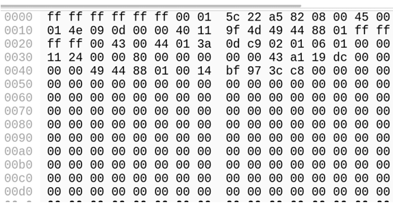
Dans une trame Ethernet, les six premiers octets sont l'adresse MAC de destination et les six octets suivants l'adresse MAC source.
On détermine le type à partir de l'adresse MAC de destination :
Unicast :
Premier octet → bit de poids faible = 0
Exemple : 00:1A:2B:3C:4D:5E
Multicast :
Bit de poids faible du premier octet = 1
Exemple : 01:00:5E:xx:xx:xx (IPv4 multicast)
Broadcast :
FF:FF:FF:FF:FF:FF
En résumé, le bit I/G (Individual/Group) du premier octet de l'adresse MAC de destination indique si l'adresse est individuelle (unicast) ou de groupe (multicast/broadcast).
Analysez deux trames différentes et déterminez laquelle utilise Ethernet II et laquelle utilise IEEE 802.3 avec LLC. Quels champs permettent de les différencier ?
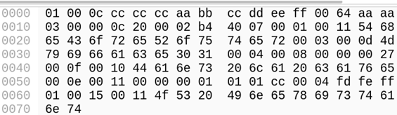
Le champ situé après les adresses MAC fait la différence :
Ethernet II :
Champ = Type (EtherType) >= 0x600 (1536)
Exemples : 0x0800 (IPv4), 0x0806 (ARP)
IEEE 802.3 + LLC :
Champ = Longueur <= 1500
Suivi d'un en-tête LLC (DSAP, SSAP, Control)
Sur la trame VLAN 802.1Q, identifiez le VLAN ID, le champ PCP et le champ DEI. Quelle est la signification de ces champs ?
Après l'adresse MAC source, on trouve un tag VLAN (4 octets).
DEI (1 bit) (Drop Eligible Indicator) : indique qu'une trame peut être supprimée en cas de congestion.
VLAN ID (12 bits) : Identifiant du VLAN (1 à 4094).
Pourquoi certaines trames observées sur un lien trunk ne contiennent-elles pas de tag VLAN ? Quel risque de sécurité cela peut-il introduire ?
Parce que les trames appartiennent au VLAN natif et le choix de configuration (compatibilité avec équipements anciens).
Les risques de sécurité sont la mauvaise isolation des domaines de diffusion et le VLAN hopping (injection de trames non taguées permettant un accès non autorisé à un autre VLAN).
→ Très typique d'un ICMP Echo Request/Reply (ping)
Analyse du TTL - Déduction réseau :
TTL observé : 32
Valeurs initiales probables :
Linux/Unix → 64
Windows → 128
→ Si origine Linux : 64 - 32 = ~32 routeurs.
→ Paquet ayant traversé un nombre significatif de sauts (ou TTL volontairement fixé bas pour tests).
Résumé des couches d'encapsulation :
Ethernet II
→ IPv4
→ ICMP
→ Données (payload ASCII)
Ordre d'encapsulation :
Données applicatives
→ ICMP (L4)
→ IP (L3)
→ Ethernet (L2)
Exercice Scapy :
À partir d'une trame réseau capturée à l'aide de Wireshark, comme par exemple la trame ci-dessous, vous devez reconstruire le paquet équivalent en utilisant la librairie Scapy (Python).
La trame observée correspond à une trame Ethernet transportant un paquet IPv4 contenant un message ICMP Echo Request avec une charge utile ASCII. Les différents champs des couches Ethernet, IP et ICMP (adresses, identifiant, TTL, type, code, etc.) doivent être identifiés à partir de la capture Wireshark.
À l'aide de Scapy, écrivez un script Python construisant le paquet couche par couche (Ether(), IP(), ICMP()) et y ajoutant la charge utile observée.
Le paquet reconstruit devra être affiché avec show() et exporté sous forme graphique au format PDF à l'aide de canvas_dump().
Les valeurs utilisées doivent correspondre fidèlement à celles observées dont la capture initiale.
Voici la solution dans le fichier `test_trame1.py` :
from scapy.all import *
# Construction du paquet
L2 = Ether(dst="00:10:4b:30:c4:4a", src="00:a0:cc:30:c8:db")
L3 = IP(src="10.0.99.2", dst="10.0.0.1", id=0x4c1d,ttl=32)
L4 = ICMP()
data = b"abcdefghijklmnopqrstuvwxyz" * 50 # payload
paquet = L2 / L3 / L4 / data
# Envoi du paquet et réception de la réponse
response = sr1(paquet, verbose=0, timeout=2)
# Affichage du paquet et de la réponse
paquet.show()
if response :
response.show()
else :
print("Aucune réponse reçue")
c = paquet.canvas_dump()
c.writePDFfile("test_trame1.pdf")
En ASCII, chaque caractère est associé à un nombre. Tout repose sur la table ASCII. L'astuce mnémotechnique très utile en réseau est de savoir que les minuscules ASCII commencent à 0x61 et les majuscules à 0x41.
On peut vérifier rapidement en Python (ou Scapy) avec chr(0x61) qui donne 'a' ou inversement avec hex(ord('a')) qui donne '0x61'.
TCP :
En-tête TCP :
La représentation visuelle/pédagogique de l'en-tête de TCP ci-dessous met l'accent sur la taille des champs et la compréhension globale. Elle est surtout utilisée pour les cours, les slides et les explications théoriques. C'est plus intuitif et moins précis au niveau binaire.
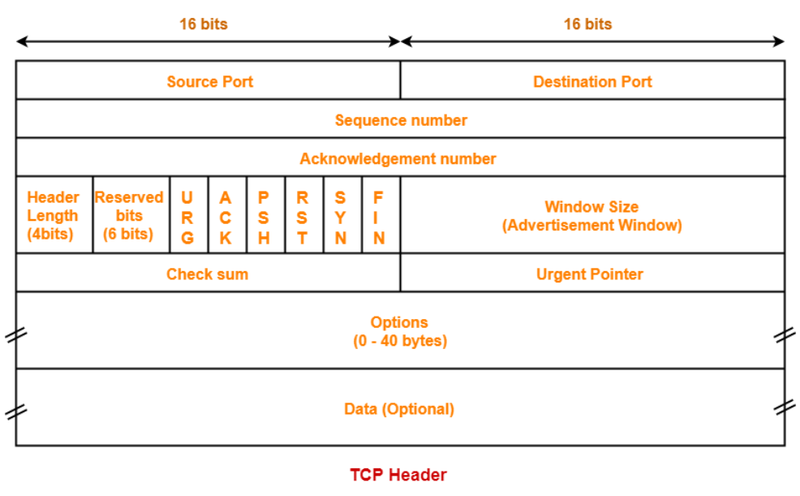
Ou alors la représentation bit à bit ci-dessous qui montre exactement la position de chaque bit, l'ordre des flags (URG, ACK, PSH, RST, SYN, FIN) et le Data Offset (taille de l'en-tête). Cette seconde représentation est utilisée pour l'implémentation en C, l'analyse de paquets (Wireshark) et les examens plus techniques. C'est plus technique mais plus proche de la réalité en mémoire.
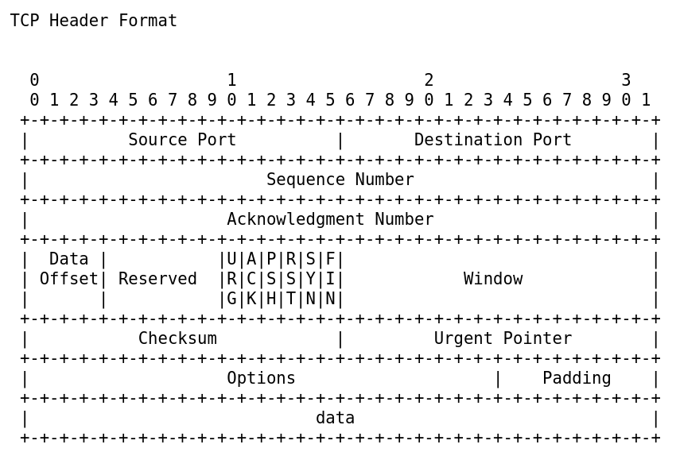
Voici les indicateurs (flags) TCP dans l'ordre exact où ils apparaissent dans l'en-tête (bit à bit) :
URG (Urgent) :
L'indicateur URG signale la présence de données urgentes dans le segment TCP. Lorsqu'il est activé, le champ Urgent Pointer est valide et indique la fin des données urgentes. Cet indicateur est aujourd'hui rarement utilisé.
ACK (Acknowledgment) :
L'indicateur ACK confirme la bonne réception des données. Lorsqu'il est positionné, le champ d'accusé de réception est valide et contient le numéro du prochain octet attendu. Après l'établissement de la connexion, ce flag est généralement activé dans la majorité des segments TCP.
PSH (Push) :
L'indicateur PSH demande au récepteur de transmettre immédiatement les données à l'application, sans attendre que le tampon soit rempli. Il est principalement utilisé par des applications interactives telles que SSH ou Telnet.
RST (Reset) :
L'indicateur RST provoque une réinitialisation immédiate de la connexion TCP. Il est utilisé en cas d'erreur, de tentative de connexion vers un port fermé ou lorsqu'une connexion est jugée invalide. Cette fermeture est brutale et ne suit pas la procédure normale FIN/ACK.
SYN (Synchronize) :
L'indicateur SYN est utilisé pour initier une connexion TCP. Il permet la synchronisation des numéros de séquence entre les deux hôtes et intervient lors de la phase d'établissement de la connexion, notamment dans le three-way handshake.
FIN (Finish) :
L'indicateur FIN indique qu'un hôte n'a plus de données à transmettre et souhaite fermer la connexion de manière ordonnée. Chaque sens de communication étant indépendant, chaque hôte doit envoyer son propre segment FIN pour mettre fin complètement à la connexion TCP.
Communication TCP :
Pour mettre fin à une connexion, l'indicateur de contrôle FIN (Finish) doit être défini dans l'en-tête de segment. Pour mettre fin à chaque session TCP unidirectionnelle, on utilise un échange en deux étapes, constitué d'un segment FIN et d'un segment ACK. Par conséquent, pour mettre fin à une seule conversation TCP, quatre échanges sont nécessaires pour mettre fin aux deux sessions (voir la figure 1 ci-dessous).
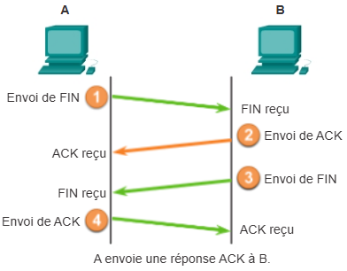
Figure 1 : Établissement et fermeture d'une connexion TCP (TCP Three-Way Handshake).
Remarque : les termes client et serveur sont utilisés ici pour simplifier l'explication, mais le processus d'interruption peut être initié par n'importe lequel des deux hôtes ayant une session ouverte.
Voici les différentes étapes du TCP Three-Way Handshake :
Quand le client n'a plus de données à envoyer dans le flux, il envoie un segment dont l'indicateur FIN est défini.
Le serveur envoie un segment ACK pour informer de la bonne réception du segment FIN, afin de fermer la session du client au serveur.
Le serveur envoie un segment FIN au client pour mettre fin à la session du serveur au client.
Le client répond à l'aide d'un segment ACK pour accuser réception du segment FIN envoyé par le serveur.
Quand le client n'a plus aucune donnée à transférer, il définit l'indicateur FIN dans l'en-tête d'un segment. Ensuite, le serveur de la connexion envoie un segment normal contenant des données dont l'indicateur ACK est défini en utilisant le numéro d'accusé de réception, confirmant ainsi que tous les octets de données ont été reçus. Quand la réception de tous les segments a été confirmée, la session est fermée.
La session dans l'autre sens est fermée selon le même processus. Le récepteur indique qu'il n'y a plus de données à envoyer en définissant l'indicateur FIN dans l'en-tête d'un segment envoyé à la source. Un accusé de réception confirme que tous les octets de données ont été reçus et que cette session, à son tour, se ferme.
Voir les figures 2 et 3 ci-dessous pour observer les indicateurs de contrôle FIN et ACK définis dans l'en-tête de segment, permettant ainsi l'interruption d'une session HTTP.
Figure 2 : Interruption de session TCP (FIN).
Un analyseur de protocole affiche les détails de la trame 16 (requête FIN TCP).
Figure 3 : Interruption de session TCP (ACK)
Un analyseur de protocole affiche les détails de la trame 17 (réponse ACK TCP).
Il est également possible de fermer la connexion à l'aide d'une connexion en trois étapes. Quand le client n'a plus de données à envoyer, il envoie un segment FIN au serveur. Si le serveur n'a plus de données à envoyer, il peut répondre en définissant les indicateurs FIN et ACK simultanément et en combinant ainsi deux étapes en une. Le client répond par un segment ACK.
Contrôle de flux :
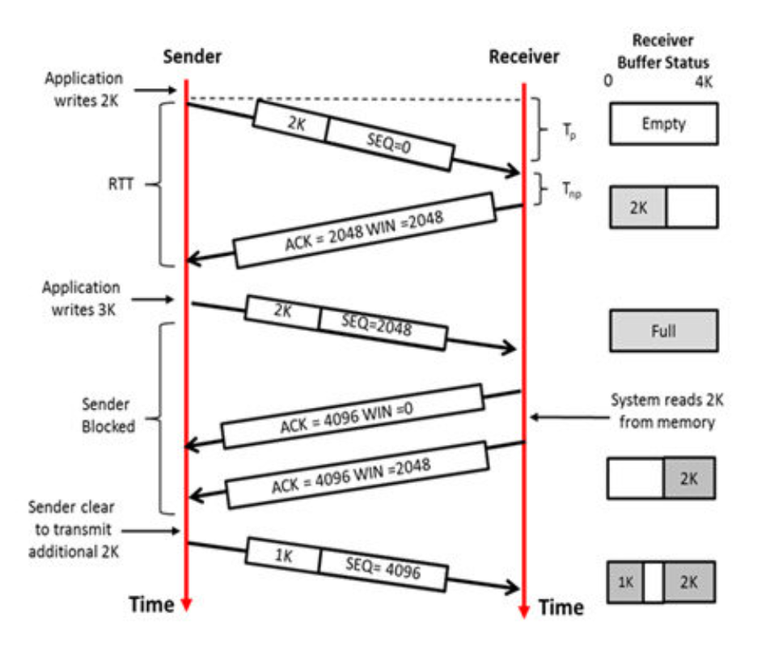
Ce schéma illustre le mécanisme de contrôle de flux de TCP, utilisant ce qu'on appelle une fenêtre glissante (sliding window).
Il montre comment un récepteur utilise le champ "Window" (WIN) pour indiquer au moteur d'envoi la quantité de données qu'il peut encore accepter dans son tampon (buffer) afin d'éviter d'être submergé.
Voici l'explication étape par étape du diagramme :
Envoi initial (2K) :
L'application de l'expéditeur (Sender) écrit 2 Ko de données.
Le paquet est envoyé avec un numéro de séquence SEQ = 0.
À la réception, le tampon du destinataire (Receiver Buffer), d'une taille de 4 Ko, est à moitié rempli (2 Ko occupés, 2 Ko libres).
Premier Accusé de réception (ACK) :
Le récepteur répond avec ACK = 2048, confirmant qu'il a bien reçu les 2048 octets (2 Ko) et qu'il attend l'octet suivant à partir de 2048.
Il précise WIN = 2048, indiquant qu'il lui reste exactement 2 Ko d'espace libre dans son tampon.
Deuxième envoi et saturation (Application writes 3K) :
L'expéditeur tente d'écrire 3 Ko, mais comme la fenêtre annoncée précédemment n'était que de 2 Ko, il n'envoie qu'un segment de 2 Ko avec SEQ = 2048.
Une fois ces 2 Ko reçus, le tampon du récepteur est full (plein) (4 Ko / 4 Ko).
Blocage de l'expéditeur (Sender Blocked) :
Le récepteur envoie un ACK = 4096, confirmant qu'il a bien reçu les 4 Ko au total.
Il annonce une fenêtre WIN = 0, ce qui signifie : J'ai tout reçu, mais je n'ai plus de place. Arrête d'envoyer !.
L'expéditeur est alors bloqué et ne peut plus transmettre de données.
Libération d'espace (System reads 2K) :
L'application côté récepteur lit 2 Ko de données depuis la mémoire tampon, ce qui libère de l'espace.
Le récepteur envoie alors un nouvel accusé de réception (ACK = 4096) avec une mise à jour de la fenêtre : WIN = 2048.
Reprise de la transmission :
L'expéditeur voit qu'il y a de nouveau de la place. Il est autorisé à transmettre ("Sender clear to transmit").
Il envoie le reliquat des données (le 1 Ko restant des 3 Ko initialement prévus) avec SEQ = 4096.
En résumé, ce schéma démontre que TCP adapte dynamiquement le débit de l'expéditeur en fonction de la capacité de traitement et de stockage du récepteur, garantissant ainsi qu'aucune donnée n'est perdue par débordement de tampon.
À la suite de ce qui est présenté sur l'image, le dialogue se poursuit pour finaliser l'envoi des données et mettre à jour l'état du tampon. Voici la suite logique de l'échange :
Réception du segment de 1 Ko : Le récepteur reçoit le paquet de 1 Ko envoyé avec SEQ = 4096.
Mise à jour du tampon : Le tampon du récepteur, qui avait 2 Ko de libre, contient désormais 3 Ko de données (les 2 Ko restants de l'étape précédente + le nouveau 1 Ko). Il reste donc 1 Ko d'espace libre.
Envoi d'un nouvel ACK : Le récepteur envoie un accusé de réception pour confirmer la réception totale : ACK = 5120 (4096 + 1024).
Annonce de la fenêtre (Window) : Dans ce message, il indique WIN = 1024, signifiant à l'expéditeur qu'il ne peut envoyer qu'un maximum de 1 Ko supplémentaire pour le moment.
Libération continue : Le dialogue continue ainsi jusqu'à ce que l'application cliente ait lu toutes les données du tampon ou que l'expéditeur n'ait plus rien à transmettre.
Application d'inscription et gestion d'étudiants en C :
Cette application implémente un service client-serveur permettant l'inscription et la gestion d'étudiants à distance, en utilisant un protocole personnalisé reposant sur TCP, avec stockage des informations dans un fichier côté serveur.
Voici les différents fichiers de l'application :
Le fichier `server.c` est :
#include "csock.h"
#include "myprotocol.h"
#include <unistd.h>
#include <fcntl.h>
#include <stdio.h>
#include <getopt.h>
typedef struct {
int id;
char nom[32];
char prenom[32];
} etudiant_st;
struct liste {
etudiant_st etudiant;
struct liste *suivant;
};
typedef struct liste liste_etudiant;
liste_etudiant *tete_liste = NULL;
/* affiche la description of de tous les options supporté */
/* affiche la description of de tous les options supporté */
void usage (FILE *fp, const char *path) {
/* prendre uniquement la derniere portion du chemin de fichier */
const char *basename = strrchr(path, '/');
basename = basename ? basename + 1 : path;
fprintf (fp, "usage: %s [OPTION]\n", basename);
fprintf (fp, " -h, --help\t\t\tafficher cette aide et quitter.\n");
fprintf (fp, " -t, --transport [PROTOCOL]\tutiliser le protocol de transport (tcp ou udp).\n");
fprintf (fp, " -p, --port=STRING\t\tLe numero de port ou le nom du service à utilisé'.\n");
fprintf (fp, " \nexemple :\n\t%s -t tcp -p 5656\n\t%s -t udp -p myprotocol\n", basename, basename);
}
liste_etudiant *initialisation() {
FILE *fich;
char nom[32], prenom[32];
int id;
liste_etudiant *liste = malloc(sizeof(*liste));
if (liste == NULL) {
exit(EXIT_FAILURE);
}
fich = fopen("etudiants.txt", "r");
if (fich == NULL) {
printf("Erreur lors de l'ouverture du fichier etudiants");
exit(1);
}
// lire les données à partie de fichier
fscanf(fich, "%d %s %s\n", &id, nom, prenom);
liste->etudiant.id = id;
strcpy(liste->etudiant.nom, nom);
strcpy(liste->etudiant.prenom, prenom);
liste->suivant = NULL;
tete_liste = liste;
// tant que la fin du fichier n'est atteint lire les données
// et stocker dans la liste
while (!feof(fich)){
liste->suivant = malloc(sizeof(*liste));
liste = liste->suivant;
fscanf(fich, "%d %s %s\n", &id, nom, prenom);
liste->etudiant.id = id;
strcpy(liste->etudiant.nom, nom);
strcpy(liste->etudiant.prenom, prenom);
liste->suivant = NULL;
// afficher les données chargées
//printf("ID : %d\tNom : %s\tPrenom : %s\n", id, nom, prenom);
}
fclose(fich);
return tete_liste;
}
void ajouter_etudiant_s(int sock, message_t message_client) {
int id;
char nom[32];
char prenom[32];
liste_etudiant *liste;
liste = tete_liste;
sscanf(message_client.data, "%d %s %s", &id, nom, prenom);
/* Aller à la fin de la liste des etudiant */
while(liste->suivant != NULL) {
liste = liste->suivant;
}
liste->suivant = malloc(sizeof(liste_etudiant));
liste = liste->suivant;
liste->etudiant.id = id;
strcpy(liste->etudiant.nom, nom);
strcpy(liste->etudiant.prenom, prenom);
liste->suivant = NULL;
printf("Etudiant Ajouter :\n\tID : %d\tNom : %s\t\tPrenom : %s\n", liste->etudiant.id, liste->etudiant.nom, liste->etudiant.prenom);
/* remplir la memoire occupé par message.data de O /
memset(message.data, 'O', sizeof(char) * DATA_SIZE);
/* ici j'aurai pu envoyer au client un message OK
message.header.message_type = OK;
// sprintf(buffer, "%d %s", message.header.message_type, message.data);
send(sock, (const char *) &message, MESSAGE_SIZE, 0); */
}
void supprimer_etudiant_s(int sock, message_t message) {
int id;
int trouve = 0;
liste_etudiant *liste, *courant, *precedent;
liste = courant = tete_liste;
sscanf(message.data, "%d", &id);
printf("Recherche de l'etudiant avec l'ID : %d\n", id);
// tant que la fin de liste n'est pas atteint
// et stocker dans la liste
liste = liste->suivant;
while (courant != NULL && !trouve) {
if (courant->etudiant.id == id) {
trouve = 1;
} else {
precedent = courant;
courant = liste;
liste = liste->suivant;
}
}
if (trouve) {
printf("Etudiant trouvé (et supprimé) : \n\t%d\n\t%s\n\t%s\n", courant->etudiant.id, courant->etudiant.nom, courant->etudiant.prenom);
precedent->suivant = courant->suivant;
free(courant);
} else {
printf("Etudiant (ID : %d) non trouvé !\n", id);
}
}
void envoyer_etudiant(int sock, message_t message_client) {
int id;
message_t my_message;
char nom[32], prenom[32];
int trouve = 0;
sscanf(message_client.data,"%d", &id);
liste_etudiant *liste;
liste = tete_liste;
while (liste != NULL && !trouve) {
if (liste->etudiant.id == id) {
trouve = 1;
} else {
liste = liste->suivant;
}
}
if (trouve) {
printf("Etudiant trouvé.\n");
printf("Envoi vers le client : \n\t%d\n\t%s\n\t%s\n", liste->etudiant.id, liste->etudiant.nom, liste->etudiant.prenom);
/* remplir la memoire occupé par message.data de S */
memset(my_message.data, 'E', sizeof(char) * DATA_SIZE);
/* ecrire les données dans message.data
* l'espace restant est rempli de 'E' */
sprintf(my_message.data, "%d %s %s ", liste->etudiant.id, liste->etudiant.nom, liste->etudiant.prenom);
my_message.header.message_type = OK;
send(sock, (const char *) &my_message, MESSAGE_SIZE, 0);
} else {
my_message.header.message_type = INVALID_OPTION;
send(sock, (const char *) &my_message, MESSAGE_SIZE, 0);
}
}
void envoyer_etudiants_liste(int sock, message_t message_client) {
char bourage = 'A';
message_t message;
message.header.message_type = OK;
liste_etudiant *liste;
liste = tete_liste;
printf("Envoi de la liste des étudiants \n");
while (liste != NULL) {
memset(message.data,bourage,DATA_SIZE);
sprintf(message.data, "%d %s %s \n", liste->etudiant.id, liste->etudiant.nom, liste->etudiant.prenom);
printf("\tétudiants : %s\n",message.data);
send(sock , (const char *) &message, MESSAGE_SIZE, 0 );
liste = liste->suivant;
bourage++;
}
message.header.message_type = DONE;
send(sock, (const char *) &message, MESSAGE_SIZE, 0);
}
void terminer_s(int sock) {
printf("Fermeture de la connexion\n");
close(sock);
}
int main(int argc, char *argv[]) {
/*char service[32] = "5656"; /* n° de port par défaut */
char service[32] = "myprotocol"; /* au lieu du n° de port on utilise le nom du service -> /etc/service */
char transport[32] = "tcp"; /* n° de port par défaut */
int mysock; /* socket passive pour le serveur */
int client_sock; /* socket de communication (active) */
struct sockaddr_in sin; /* structure décrivant la socket active */
int lsin = sizeof(sin);
char buffer[100]; /* buffer pour accueillir les caractères */
int operation;
message_t message;
int opt;
liste_etudiant *tete_liste, *liste_etud;
/* Traitement des paramettres de la ligne de commande */
struct option longopts[] = {
{ "help", no_argument, NULL, 'h' },
{ "transport", optional_argument, NULL, 't' },
{ "service", required_argument, NULL, 'p' },
{ 0 }
};
/* boucle infinie, jusqu'a la fin du parsing des options */
while (1) {
opt = getopt_long (argc, argv, "ht::p:", longopts, 0);
if (opt == -1) {
/* -1 indique q'il n y plus d'options */
break;
}
switch (opt) {
case 'h':
usage(stderr, argv[0]);
return 0;
break;
case 't':
printf ("Protocole de transport : '%s'\n", optarg);
strcpy(transport, optarg);
break;
case 'p':
printf ("Service : '%s'\n", optarg);
strcpy (service, optarg);
break;
case '?':
/* '?' indique d'un option a été malformé: Option inconnu */
usage (stderr, argv[0]);
return 1;
default:
break;
}
}
tete_liste = initialisation();
liste_etud = tete_liste;
while(liste_etud != NULL) {
printf("ID : %d --- Nom : %s --- Prenom : %s\n", liste_etud->etudiant.id, liste_etud->etudiant.nom, liste_etud->etudiant.prenom);
liste_etud = liste_etud->suivant;
}
mysock = server_socket(service, "tcp", 5);
puts("Attente de la connexion cliente...\n");
/* attente de la connexion d'un client et création de la socket de communication 'client' */
client_sock = accept(mysock, (struct sockaddr *) &sin, &lsin);
/* Affichage de l'adresse IP du client */
printf("Connexion depuis: %s\n", inet_ntoa(sin.sin_addr));
/* fermeture de la socket */
close(mysock);
do {
printf("Attente de requettes clients ... \n");
read(client_sock, (const char *) &message, MESSAGE_SIZE);
operation = message.header.message_type;
switch(operation) {
case ADD_STUDENT :
ajouter_etudiant_s(client_sock, message);
break;
case DEL_STUDENT :
supprimer_etudiant_s(client_sock, message);
break;
case GET_STUDENT :
envoyer_etudiant(client_sock, message);
break;
case GET_STUDENT_LIST :
envoyer_etudiants_liste(client_sock, message);
break;
case BYE :
terminer_s(client_sock);
break;
default :
printf("erreur operation %d n'est pas valide\n", operation);
break;
}
} while(operation != BYE && client_sock != 0);
// printf("buffer de fen2 = %s\n", buffer);
/* write(partenaire, caractere, sizeof(caractere)); */
return 0;
}
Le fichier `client.c` est :
#include <stdio.h>
#include <getopt.h>
#include "csock.h"
#include "myprotocol.h"
void usage (FILE *fp, const char *path) {
/* prendre uniquement la derniere portion du chemin de fichier */
const char *basename = strrchr(path, '/');
basename = basename ? basename + 1 : path;
fprintf (fp, "usage: %s [OPTION]\n", basename);
fprintf (fp, " -h, --help\t\t\tafficher cette aide et quitter.\n");
fprintf (fp, " -s, --server [STRING]\tl'adresse IP ou le nom du serveur.\n");
fprintf (fp, " -t, --transport [STRING]\tutiliser le protocol de transport (tcp ou udp).\n");
fprintf (fp, " -p, --port=STRING\t\tLe numero de port ou le nom du service à utilisé'.\n");
fprintf (fp, " \nexemple :\n\t%s -s localhost -t tcp -p 5656\n\t%s -s 192.168.1.1 -t udp -p myprotocol\n", basename, basename);
}
void affiche_menu(){
printf("===============================================================================\n");
printf("Veuillez faire votre choix\n");
printf("-------------------------------------------------------------------------------\n");
printf("\t%d : pour initialiser la connexion avec le serveur.\n", INITIALIZE);
printf("\t%d : pour ajouter un etudiant.\n", ADD_STUDENT);
printf("\t%d : pour supprimer un etudiant.\n", DEL_STUDENT);
printf("\t%d : pour afficher un etudiant.\n", GET_STUDENT);
printf("\t%d : pour afficher tous les etudiants.\n", GET_STUDENT_LIST);
printf("\t%d : pour Terminer.\n", BYE);
printf("===============================================================================\n");
printf("Votre choix : ");
}
void ajouter_etudiant_c(int sock) {
int id;
char nom[32];
char prenom[32];
message_t message;
char buffer[MESSAGE_SIZE];
printf("Veuillez donner l'ID de l'etudiant : ");
scanf("%d", &id);
printf("Veuillez donner le nom de l'etudiant : ");
scanf("%s", nom);
printf("Veuillez donner le prenom de l'etudiant : ");
scanf("%s", prenom);
/* remplir la memoire occupée par message.data de A */
memset(message.data, 'A', sizeof(char) * DATA_SIZE);
/* ecrire les données dans message.data
* l'espace restant est rempli de 'A' */
sprintf(message.data, "%d %s %s", id, nom, prenom);
message.header.message_type = ADD_STUDENT;
// sprintf(buffer,"%d %s", message.header.message_type, message.data);
send(sock, (const char *) &message, MESSAGE_SIZE, 0);
}
void supprimer_etudiant_c(int sock) {
int id;
message_t message;
char buffer[MESSAGE_SIZE];
printf("Veuillez donner l'ID de l'etudiant à supprimer : ");
scanf("%d", &id);
/* remplir la memoire occupé par message.data de S */
memset(message.data, 'S', sizeof(char) * DATA_SIZE);
/* ecrire les données dans message.data
* l'espace restant est rempli de 'S' */
sprintf(message.data, "%d", id);
message.header.message_type = DEL_STUDENT;
//sprintf(buffer, "%d %s", message.header.message_type, message.data);
send(sock, (const char *) &message, MESSAGE_SIZE, 0 );
}
void afficher_etudiant_c(int sock) {
int id;
message_t message;
char nom[32], prenom[32];
char buffer[MESSAGE_SIZE];
printf("Veuillez donner l'ID de l'etudiant à afficher : ");
scanf("%d", &id);
/* remplir la memoire occupé par message.data de S */
memset(message.data, 'P', sizeof(char) * DATA_SIZE);
/* ecrire les données dans message.data
* l'espace restant est rempli de 'S' */
sprintf(message.data, "%d", id);
message.header.message_type = GET_STUDENT;
send(sock, (const char *) &message, MESSAGE_SIZE, 0);
read(sock, (const char *) &message, MESSAGE_SIZE, 0);
if (message.header.message_type == OK) {
printf("Etudiant reçu :=:\t %s \n", message.data);
} else {
printf("Etudiant non trouvé!");
}
}
void afficher_etudiants_liste_c(int sock) {
message_t message;
message.header.message_type = GET_STUDENT_LIST;
/* envoyer la demande */
send(sock, (const char *) &message, MESSAGE_SIZE, 0);
/* reception de la liste */
read(sock, (const char *) &message, MESSAGE_SIZE, 0);
printf("Liste des étudiants reçu : \n");
while (message.header.message_type != DONE) {
printf("\tétudiant :%s \n", message.data);
read(sock , (const char *) &message, MESSAGE_SIZE, 0);
}
}
void terminer_c(int sock) {
message_t message;
message.header.message_type = BYE;
send(sock, (const char *) &message, MESSAGE_SIZE, 0);
printf("Fermeture de la connexion\n");
close(sock);
}
int main(int argc,char *argv[]) {
char service[32] = "5656"; /* n° de port par défaut */
char transport[32] = "tcp"; /* n° de port par défaut */
char server_address[32] = "localhost"; /* l'adresse du serveur */
int choix;
int sock = 0;
int opt;
/* Traitement des paramettres de la ligne de commande */
struct option longopts[] = {
{ "help", no_argument, NULL, 'h' },
{ "server", optional_argument, NULL, 's' },
{ "transport", optional_argument, NULL, 't' },
{ "service", required_argument, NULL, 'p' },
{ 0 }
};
/* boucle infinie, jusqu'a la fin du parsing des options */
while (1) {
opt = getopt_long (argc, argv, "h:s:t:p:", longopts, 0);
if (opt == -1) {
/* -1 indique q'il n y plus d'options */
break;
}
switch (opt) {
case 'h':
usage(stderr, argv[0]);
return 0;
break;
case 's':
printf ("Adresse Serveur : '%s'\n", optarg);
strcpy(server_address, optarg);
break;
case 't':
printf ("Protocole de transport : '%s'\n", optarg);
strcpy(transport, optarg);
break;
case 'p':
printf ("Service : '%s'\n", optarg);
strcpy (service, optarg);
break;
case '?':
/* '?' indique d'un option a été malformé: Option inconnu */
usage (stderr, argv[0]);
return 1;
default:
break;
}
}
printf("DATASIZE = %d\n, MESSAGE_SIZE = %d\n", DATA_SIZE, MESSAGE_SIZE);
//ajouter_etudiant(sock);
do {
affiche_menu();
scanf("%d", &choix);
switch(choix) {
case INITIALIZE :
if (sock == 0) {
sock = client_socket(server_address,service,transport);
} else {
printf("connexion deja établi\n");
}
break;
case ADD_STUDENT :
if (sock != 0) {
ajouter_etudiant_c(sock);
} else {
printf("pas de connexion avec le serveur\n");
}
break;
case DEL_STUDENT :
if (sock != 0) {
supprimer_etudiant_c(sock);
} else {
printf("pas de connexion avec le serveur\n");
}
break;
case GET_STUDENT :
if (sock != 0) {
afficher_etudiant_c(sock);
} else {
printf("pas de connexion avec le serveur\n");
}
break;
case GET_STUDENT_LIST :
if (sock != 0) {
afficher_etudiants_liste_c(sock);
} else {
printf("pas de connexion avec le serveur\n");
}
break;
case BYE :
terminer_c(sock);
break;
default :
printf("erreur de saisi %d n'est pas valide\n", choix);
break;
}
} while(choix != BYE);
return 0;
}
Le fichier `etudiants.txt` est :
10 DEHERDT Gabiel
22 BAH Amadou
30 GEIST Lucas
20 KAMMEGNE Henri
28 PADOAN Carine
32 ARHBAL Nadia
54 AZGHAY Redouan
25 BOUTAGOUMANT Soufian
52 BOUZAMBOU Aädel
48 MITELLO Vincent
41 KAYUMBA Eric
14 ZEGGERS François
61 SENHAJI Mohamed
18 EL-KADOURY Abdelghani
47 VANDENHEEDE Driss
Le fichier `myprotocol.h` est :
/*********************************************************************************
* myprotocol.h *
**********************************************************************************
* Auteur : Pierre Muhirwa *
* description : illustration de protocoles
* Fichier d'entête contenant les types de données et de messages utilisés *
* lors des échanges de données entre le serveur et le(s) clients *
**********************************************************************************/
#ifndef _MYPROTOCOL_H
#define _MYPROTOCOL_H
/* la taille du payload */
#define DATA_SIZE 256
/* Les types de messages echangés entre les programmes client/serveur */
#define INITIALIZE 1 /* initialiser la connexion */
#define ADD_STUDENT 2 /* inscrire un etudiant */
#define DEL_STUDENT 3 /* supprimer un etudiant */
#define GET_STUDENT 4 /* envoyer un etudiant vers le client */
#define GET_STUDENT_LIST 5 /* envoyer la liste de tous les etudiants */
#define OK 6
#define DONE 7
#define INVALID_OPTION 8
#define BYE 9
/* structure implementant l'entete de notre protocole */
typedef struct {
uint8_t message_type;
uint8_t message_length;
uint8_t flags;
} header_t;
/* structure implementant le message (PDU) */
typedef struct {
header_t header; /* l'entete de notre protocole */
char data[DATA_SIZE]; /*le payload de notre protocole */
} message_t;
#define MESSAGE_SIZE sizeof(message_t)
#endif
Le fichier `csock.h` est :
/**************************************************************************
* csock.h : Fichier en tete pour les fonctions utilisant les sockets *
* Auteur : Muhirwa Pierre *
**************************************************************************/
#include <errno.h>
#include <sys/types.h>
#include <sys/socket.h>
#include <netinet/in.h>
#include <arpa/inet.h>
#include <netdb.h>
#include <string.h>
#include <stdio.h>
#include <stdarg.h>
#include <stdlib.h>
#ifndef INADDR_NONE
#define INADDR_NONE 0xffffffff
#endif
void error_socket(const char *format, ...);
int create_socket(const char *service, const char *transport, struct sockaddr_in *sin);
int client_socket(const char *host,const char *service, const char *transport);
int server_socket(const char *service, const char *transport, int lqueue);
Le fichier `csock.c` est :
/**************************************************************************
* csock.c : Fichier source pour les fonctions utilisant les sockets *
* Auteur : Muhirwa Pierre *
**************************************************************************/
#include "csock.h"
extern int errno;
void error_socket(const char *format, ...) {
va_list args;
va_start(args, format);
vfprintf(stderr, format, args);
va_end(args);
exit(1);
}
int create_socket(const char *service, const char *transport, struct sockaddr_in *sin) {
/* structure permettant de récupérer les informations numériques à partir
des nom de service(n° port) et de protocole transport (n° protocole) */
struct servent *iservice;
struct protoent *itransport;
int s, type, proto;
/* initialisation de la structure socket */
memset(sin,0,sizeof(*sin)); /* mise à zéro */
sin->sin_family = AF_INET; /* Famille internet */
/* Recherche du numéro de port */
sin->sin_port = htons(atoi(service));
/* Si le service n'était pas un numéro on le recherche dens /etc/services */
if (!sin->sin_port) {
iservice = getservbyname(service, transport);
if (!iservice) {
error_socket("Service non enregistré: %s\n", service);
}
sin->sin_port = iservice->s_port;
}
/* recherche du numéro de protocole */
itransport = getprotobyname(transport);
if (!itransport) {
error_socket("Protocole non enregistré: %s\n", transport);
}
proto = itransport->p_proto;
if (!strcmp(transport, "udp")) {
type = SOCK_DGRAM; /* protocole UDP */
} else {
type = SOCK_STREAM; /* protocole TCP */
}
/* creation de la socket */
s = socket(AF_INET, type, proto);
if (s < 0) {
error_socket("Création de socket impossible: %s", strerror(errno));
}
return s;
}
/**
* Fonction qui crée une socket client : etablit une connexion avec le serveur
* @param :
* - host : une chaine de caractere qui conntien l'adresse du serveur.
* - service : le nom du service ou le numero de port
* sous forme de chaine de caractere.
* - transport : protocole de transport utilisé "tcp" ou "udp".
*
* @see :
- create_socket() : utilise cette fonction pour creer la socket
* @return : la socket client (s)
*/
int client_socket(const char *host, const char *service, const char *transport) {
/* structure décrivant la socket */
struct sockaddr_in sin;
struct hostent *ihost;
int s;
/* création de la socket */
s = create_socket(service, transport, &sin);
/* recherche de l'adresse IP de host */
sin.sin_addr.s_addr = inet_addr(host);
/* si l'hôte n'est pas une adresse IP mais un nom, on recherche dans (/etc/host, dns ) */
if (sin.sin_addr.s_addr == INADDR_NONE) {
ihost = gethostbyname(host);
if (!ihost) {
error_socket("Hôte inconnu : %s\n", host);
}
memcpy(&sin.sin_addr, ihost->h_addr, ihost->h_length);
}
/* connexion de la socket */
if (connect(s, (struct sockaddr *) &sin, sizeof(sin)) < 0) {
error_socket("Impossible de se connecter à %s[%s]: %s", host, service,strerror(errno));
}
return s;
}
/**
* Fonction qui crée une socket client : etablit une connexion avec le serveur
* @param :
* - host : une chaine de caractere qui conntien l'adresse du serveur.
* - service : le nom du service ou le numero de port
* sous forme de chaine de caractere.
* - transport : protocole de transport utilisé "tcp" ou "udp".
*
* @see :
- create_socket() : utilise cette fonction pour creer la socket
* @return : la socket client (s)
*/
int server_socket(const char *service, const char *transport, int lqueue){
/* structure décrivant la socket */
struct sockaddr_in sin;
int s;
/* création de la socket */
s = create_socket(service, transport, &sin);
sin.sin_addr.s_addr = INADDR_ANY;
/* Allocation du numéro de port */
if (bind(s, (struct sockaddr *) &sin, sizeof(sin)) < 0) {
error_socket("Impossible de lier la socket à %s: %s\n", service, strerror(errno));
}
/* Placer la socket en mode passif si transport != "udp" */
if (strcmp(transport, "udp") && listen(s, lqueue) < 0) {
error_socket("Mode passif impossible sur %s: %s\n", service,strerror(errno));
}
return s;
}
Le fichier `RFCXXXXX_MyProtocol.txt` est :
Network Working Group P. Muhirwa
Request for Comments: MYPROTO-01 (Example)
Category: Informational Jan 2026
MyProtocol - Simple Client/Server Protocol
-------------------------------------------
Status of This Memo
This document is an informational RFC-like specification that
describes "MyProtocol", a simple application-layer protocol
used to illustrate client/server exchanges.
Distribution of this memo is unlimited.
1. Introduction
MyProtocol is a lightweight application protocol designed for
educational purposes. It illustrates basic concepts such as
protocol headers, message types, payloads, and request/response
interactions between a client and a server.
The protocol operates over a reliable transport (e.g. TCP) and
uses a fixed-size Protocol Data Unit (PDU).
2. Terminology
The key words "MUST", "MUST NOT", "SHOULD", and "MAY" in this
document are to be interpreted as described in RFC 2119.
Client:
An application initiating requests.
Server:
An application responding to client requests.
PDU:
Protocol Data Unit, represented by the message_t structure.
3. Protocol Overview
Communication is performed using messages composed of:
- a fixed-size header
- a fixed-size payload (data)
All messages exchanged between the client and server share the
same format. The semantics of the message are determined by the
"message_type" field in the header.
4. Message Format
Each message (PDU) is defined as follows:
0 1 2
0 1 2 3 4 5 6 7 8 9 0 1 2 3 4 5 6 7 8 9 0 1 2 3
+---------------+---------------+---------------+
| message_type | msg_length | flags |
+---------------+---------------+---------------+
| |
| data (payload) |
| 256 bytes |
| |
+-----------------------------------------------+
Total message size: sizeof(message_t)
5. Header Fields
5.1 message_type (1 byte)
Indicates the type of message being exchanged.
This field defines the operation to be performed or the meaning
of the message.
5.2 message_length (1 byte)
Indicates the length of meaningful data in the payload.
The maximum value MUST NOT exceed DATA_SIZE (256).
5.3 flags (1 byte)
Reserved for future use.
This field is currently unused and MUST be set to 0.
6. Payload (data)
The payload is a character array of fixed size (256 bytes).
Its interpretation depends on the message_type.
If the payload contains a string, it SHOULD be null-terminated.
Unused bytes MAY be set to zero.
7. Message Types
The following message types are defined:
Value Name Description
----- ----------------- -------------------------------------
1 INITIALIZE Initialize a client/server connection
2 ADD_STUDENT Add a student record
3 DEL_STUDENT Delete a student record
4 GET_STUDENT Retrieve a single student
5 GET_STUDENT_LIST Retrieve all students
6 OK Operation accepted
7 DONE Operation completed
8 INVALID_OPTION Unsupported or invalid request
9 BYE Terminate the connection
8. Operations
8.1 Connection Initialization
The client sends an INITIALIZE message to the server.
The server replies with an OK message if the initialization
succeeds.
8.2 Add Student
The client sends an ADD_STUDENT message.
The payload contains the student information.
The server replies with OK followed by DONE.
8.3 Delete Student
The client sends a DEL_STUDENT message with the student identifier
in the payload.
The server replies with DONE if the deletion succeeds.
8.4 Get Student
The client sends a GET_STUDENT message.
The server replies with a GET_STUDENT message containing the
requested student data, or INVALID_OPTION if not found.
8.5 Get Student List
The client sends a GET_STUDENT_LIST message.
The server replies with one or more messages containing the list
of students.
8.6 Termination
Either peer MAY send a BYE message to terminate the session.
No further messages MUST be sent after BYE.
9. Error Handling
If the server receives an unknown or unsupported message_type,
it MUST respond with INVALID_OPTION.
Malformed messages MAY be ignored.
10. Security Considerations
This protocol provides no authentication, confidentiality, or
integrity mechanisms. It is intended for demonstration purposes
only and MUST NOT be used in production environments.
11. IANA Considerations
This document has no IANA actions.
12. Author
Pierre Muhirwa
Le fichier `Makefile` est :
all : client server
client : client.c myprotocol.h libcsock.a
gcc -w -o client client.c -L. -lcsock
server : server.c myprotocol.h libcsock.a
gcc -w -o server server.c -L. -lcsock
libcsock.a : csock.h csock.c
gcc -w -c -o libcsock.a csock.c
clean:
rm -f server
rm -f client
rm -f libcsock.a
La commande make clean supprime les fichiers générés lors de la compilation (comme les fichiers objets .o et les exécutables) afin de nettoyer le répertoire de travail et permettre une recompilation propre du projet.
Exercices de Network Security :
Labo 1 : construction d'un petit réseau :
Objectif :
L'objectif de ce premier labo est de se familiariser avec l'environnement de simulation des réseaux (GNS3) et de mettre en place un petit réseau tout en introduisant les notions de sécurité des réseaux.
Scénario :
Vous êtes un administrateur réseau/sécurité junior, vous êtes engagé pour mettre en place et gérer le réseau d'une petite entreprise.
Le réseau est composé d'un routeur, d'un switch et de trois PC. Vous devez permettre aux utilisateurs d'accéder à Internet.
En tant qu'administrateur, vous devez protéger votre PC contre les éventuelles attaques depuis les PC utilisateurs (ils ne doivent pas voir votre PC).
Vous devez faire en sorte que si un équipement autre que ceux installés par vos soins ne soit pas autorisé.
Sécurité : désactivation du VLAN 1, STP, ACL, Mac Flooding, Port Security, ARP snooping, DHCP snooping.
Topologie :
Voici les différentes étapes à réaliser :
Créer un nouveau projet dans GNS3 avec le menu "File → New Project".
Avant d'ajouter quoi que ce soit, vérifier la VM dans le menu "Edit → Preferences → GNS3 VM".
Dans la fenêtre du projet, dans le panel "Devices" ou "Nodes", on doit faire un drag & drop les éléments suivants et les positionner sur l'aire de travail :
IOS ON UNIX / IOU L2 → place un Switch1.
IOS ON UNIX / IOU L3 → place un Router1.
End devices / VPCS → glisse 3 fois VPCS (PC1, PC2, PC3).
Cloud → choisis NAT (ou Cloud puis configure l'interface NAT).
On va câbler les différents éléments ensemble via l'icône "Connect" (le câble) avec les paramètres suivants :
Cloud (NAT) → sélectionne l'interface vers Router1 e0/0.
Connecte Router1 e0/1 → Switch1 e0/0.
Connecte Switch1 e0/1 → PC1.
Switch1 e0/2 → PC2.
Switch1 e0/3 → PC3.
Cliquez sur "Play" (bouton triangle vert en haut) pour démarrer tout le projet OU clique-droit sur chaque noeud → Start.
On va ouvrir les consoles (GUI) et entrer les commandes IOS. Pour cela, on clique sur l'élément → "Console" (ou double-clic) pour ouvrir une console.
Chaque fois que tu entres en configure terminal ou dans une interface, pense à :
sortir de l'interface : exit
sortir du mode global : end (ou exit plusieurs fois)
sauvegarder : write memory ou copy running-config startup-config
Configuration du routeur (Router1) :
Comme NAT va sûrement se crasher, il faut changer la RAM Size dans la configuration du routeur. Attention, la RAM Size dépend de l'image IOU. Voici ma configuration du Router 1 :
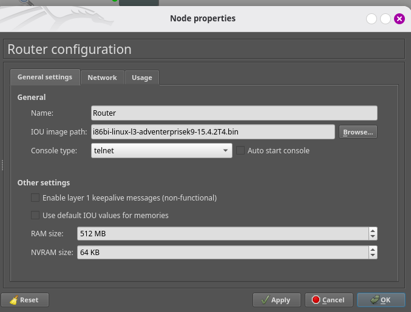
On entre en mode privilégié puis conf t :
enable
configure terminal
interface e0/0
ip address dhcp
ip nat outside
no shutdown
exit
L'interface e0/0 du routeur est configurée en DHCP afin d'obtenir automatiquement une adresse IP depuis le cloud NAT de GNS3.
Le NAT (Network Address Translation) est le mécanisme réseau qui traduit les adresses IP privées en adresses IP publiques (et inversement) pour permettre à plusieurs machines d'un réseau interne de partager une seule adresse IP publique, tout en masquant la structure interne du réseau (bénéfice de sécurité de base).
Lorsque l'on exécute la commande show ip interface brief sur le routeur, on constate que l'interface obtient normalement une adresse IP via DHCP.
Pour utiliser une configuration statique, on supprime l'addressage DHCP et on configure manuellement une adresse IP fixe sur l'interface à l'aide de la commande suivante :
ip address 192.168.122.2 255.255.255.0
Le passage à une configuration IP statique garantit une adresse IP permanente sur le routeur, ce qui est indispensable pour assurer la cohérence des règles de sécurité, du routage et des services réseau.
L'interface e0/0 représente la connexion vers le réseau externe (Internet) et est donc définie comme interface NAT outside.
Interface vers le switch (e0/1) + Subinterfaces dot1Q :
interface e0/1
no shutdown
exit
interface e0/1.2
encapsulation dot1Q 2
ip address 192.168.2.1 255.255.255.0
ip nat inside
exit
interface e0/1.3
encapsulation dot1Q 3
ip address 192.168.3.1 255.255.255.0
ip nat inside
exit
Les interfaces e0/1.2 et e0/1.3 ne sont pas visibles dans l'image car elles ne sont pas physiques.
Ce sont des sous-interfaces virtuelles nécessaires pour le routage inter-VLAN.
La commande encapsulation dot1Q 2 configure l'encapsulation dot1Q avec le tag VLAN 2.
La commande ip address 192.168.2.1 255.255.255.0 attribue l'adresse IP de passerelle pour le VLAN 2.
DHCP Server (dans les deux VLANs) :
On peut exclure des adresse IP du pool DHCP que ceux-ci ne soient pas utilisés dans les offres d'adresse par le serveur DHCP.
ip dhcp excluded-address 192.168.2.1 192.168.2.2
ip dhcp excluded-address 192.168.3.1 192.168.3.2
Un DHCP pool représente le pool des adresses allouées, c'est-à-dire que c'est un ensemble d'adresses.
ip dhcp pool POOL_UTILISATEURS
network 192.168.2.0 255.255.255.0
default-router 192.168.2.1
dns-server 1.1.1.1 8.8.8.8
exit
ip dhcp pool POOL_ADMINS
network 192.168.3.0 255.255.255.0
default-router 192.168.3.1
dns-server 1.1.1.1 8.8.8.8
exit
L'image ne mentionne pas explicitement la création de deux pools... mais elle l'implique parce que chaque VLAN est un réseau IP séparé.
La règle fondamentale est que 1 VLAN = 1 réseau = 1 pool DHCP. Tu ne peux pas faire un pool pour plusieurs réseaux. Donc, si tu as deux VLANs, tu DOIS avoir deux pools.
En gros, l'image ne le dit pas en toutes lettres, mais c'est une conséquence logique obligatoire.
Cisco fonctionne comme ça parce qu'un pool DHCP inclut :
le réseau
la passerelle par défaut
les options DHCP
la place d'adresses possibles
Or chaque VLAN :
a une passerelle différente
est un broadcast domain différent
a son propre sous-réseau
Donc, on ne peut pas mutualiser le pool.
La commande network 192.168.2.0 255.255.255.0 ne signifie pasdonner l'adresse 192.168.2.0, mais signifie ce pool DHCP concerne tout le réseau 192.168.2.0/24.
NAT Overload (Internet) :
Le PAT est une forme de NAT (overload) qui traduit non seulement l'adresse IP mais aussi les ports pour permettre à plusieurs clients internes de partager une IP publique.
Il faut configurer les listes d'accès (ACL) pour les subnets qui peuvent utiliser le NAT et configurer le NAT.
access-list 1 permit 192.168.2.0 0.0.0.255
access-list 1 permit 192.168.3.0 0.0.0.255
ip nat inside source list 1 interface e0/0 overload
L'access-list 1 sert uniquement à filtrer sur l'IP source et rien d'autre.
Pour le NAT, Cisco recommande une ACL standard, car NAT n'a pas besoin de protocole, ni port, ni IP destination. Il a juste besoin de quelles IP internes sont autorisées à être NATées.
L'access-list 100 est une ACL étendue qui permet de filtrer :
IP source
IP destination
protocole
port
direction
etc.
Elle est utilisée pour interdire la communication VLAN2 → VLAN3, ce qui nécessite de spécifier les deux réseaux.
→ ACL 100 = règle de sécurité pour contrôler le trafic inter-VLAN.
→ ACL 1 = liste des réseaux internes autorisés au NAT → pas une règle de sécurité.
Ce sont donc deux usages différents et donc deux ACL différentes.
La commande ip nat inside source list 1 interface e0/0 overload permet au NAT de traduire plusieurs adresses internes simultanément en utilisant une seule adresse IP publique.
Avant la commande : les machines internes ne pouvaient pas accéder à Internet correctement, car le routeur ne traduisait pas leurs adresses privées.
Après la commande : toutes les adresses internes autorisées par l'ACL partagent une seule adresse IP publique pour sortir vers Internet.
Fonctionnement : chaque flux est différencié par les numéros de port, permettant à plusieurs machines de communiquer simultanément avec l'extérieur.
Bénéfice : les machines internes peuvent désormais envoyer et recevoir des données sur Internet de manière stable et sécurisée.
Après avoir configuré le NAT overload et défini les interfaces inside et outside, une interface NVI (Network Virtual Interface) est créée automatiquement par le routeur.
Cette commande est visible lorsqu'on exécute la commande suivante :
show ip interface brief
Le NVI relie la règle NAT aux interfaces physiques et centralise la traduction des adresses pour simplifier la configuration.
Aussi bien penser à changer le nuage avec NAT sur GNS3 :
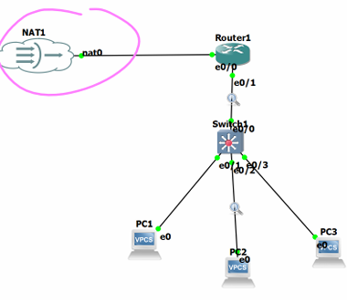
On vérifie la route par défaut :
show ip route
Si elle est absente :
ip route 0.0.0.0 0.0.0.0 e0/0
Ou sans DHCP :
ip route 0.0.0.0 0.0.0.0 e0/0 192.168.122.1
Sauvegarde :
end
copy running-config startup-config
Si tes interfaces ont d'autres noms (E0/1 etc.), adapte. Sur IOS L3 les noms peuvent être Ethernet0/1 ou GigabitEthernet0/1; vérifie avec :
show ip interface brief
Le mot do permet d'exécuter une commande du mode EXEC (show, ping, etc.) depuis un mode de configuration.
Normalement, les commandes show ne fonctionnent que en mode privilégié (#).
Configuration du switch (Switch1) :
Création des VLANs :
Qu'est-ce qu'un VLAN et pouquoi l'utiliser ?
Un VLAN (Virtual Local Area Network) est un LAN virtuel (sous-groupe dans un LAN). Il permet aux administrateurs réseau de séparer un réseau commuté (présence de commutateur/switch) unique en plusieurs groupes pour un certain niveau de sécurité des systèmes présent dans le réseau.
Utiliser un VLAN permet d'avoir :
Une faible latence (comparé à un LAN simple).
Segmentation du réseau (avoir plusieurs sous-réseaux dans un même réseau qui permet d'augmenter le nombre d'hôtes dans le réseau).
Une isolation entre plusieurs VLANs.
Permet une certaine évolutivité (sans rajouter de matériels physiques inutiles et encombrant).
enable
configure terminal
vlan 2
name UTILISATEURS
exit
vlan 3
name ADMINS
exit
Désactiver le VLAN (sécurité) :
Lorsque l'on fait show vlan, on constate que l'on a tous les ports par défaut dans le vlan1 et c'est un problème. Si tous les ports inutilisés restent dans le vlan 1, un attaquant physique qui a accès à un port inutilisé peut faire plusieurs choses problématiques comme se connecter au switch, intercepter ou injecter du trafic interne, etc...
La solution est donc de créer un SVI (Switched Virtual Interface) pour le vlan en question (ici le vlan 1) : l'interface de management passe sur ce VLAN3 dédié, isolé du vlan par défaut.
interface Vlan1
shutdown
exit
Le VLAN 1 est désactivé afin de réduire la surface d'attaque, car il est utilisé par défaut pour la gestion et certains protocoles internes (CDP, STP, etc.).
Cisco IOS écrit automatiquement les interfaces VLAN avec un "V" majuscule par convention interne pour nommer les SVI (Switched Virtual Interfaces).
Trunk vers le routeur (e0/0) :
À quoi sert le mode trunk ?
Un trunk sert à transporter plusieurs VLANs sur un seul lien physique.
Il tague les trames avec 802.1Q pour indiquer à quel VLAN elles appartiennent.
Sans trunk, un lien ne peut porter qu'un seul VLAN (mode access).
Que contient ce tag 802.1Q ?
Le tag 802.1Q contient :
VLAN ID (12 bits) : le numéro de VLAN (1-4094)
PCP (3 bits) : priorité (QoS)
DEI (1 bit) : indicateur de drop (congestion)
Remarque : Sur un trunk, un VLAN peut être "native" : ses trames passentsans tag (non taguées). Le VLAN natif permet de gérer le trafic non tagué sur un trunk et permet la compatibilité avec des équipements/flux qui ne taggent pas (ancien équipement ou protocole).
Un bon réflexe de sécurité serait de ne pas utiliser VLAN 1, définir un native VLAN inutilisé et autoriser uniquement les VLANs nécessaires sur le trunk, ce qui permet d'éviter les attaques VLAN hopping (double-tagging).
La commande switchport trunk encapsulation dot1q définit le protocole d'encapsulation 802.1Q pour le trunk. Ce protocole ajoute un tag (étiquette) de 4 octets aux trames Ethernet pour identifier le VLAN auquel elles appartiennent, permettant ainsi de transporter plusieurs VLANs sur un seul lien physique.
La commande switchport mode trunk configure le port en mode trunk pour transporter plusieurs VLANs.
Par défaut, le trafic de tous les VLANs est autorisé à passer dans un lien trunk. Il est conseillé d'autoriser uniquement le trafic des VLANs que nous avons créé (que nous connaissons) à passer dans le lien trunk, le trafic des autres VLANs ne sera pas donc autorisé, c'est-à-dire la commande switchport trunk allowed vlan 2,3.
La commande spanning-tree mode pvst active le mode PVST (Per-VLAN Spanning Tree), qui permet de calculer un arbre Spanning Tree distinct pour chaque VLAN afin d'éviter les boucles de niveau 2.
La commande spanning-tree extend system-id modifie la manière dont est calculé le Bridge ID en y intégrant l'identifiant du VLAN, ce qui garantit un Bridge ID unique par VLAN et permet l'élection d'un root bridge différent pour chaque VLAN.
Sauvegarde :
end
write memory
Cisco préfère la commande suivante :
end
copy running-config startup-config
Configuration des PCS (PC1, PC2, PC3) :
Dans la console VPCS :
ip dhcp
Cette commande sert à obtenir automatiquement une adresse IP depuis le routeur.
On a DDORA → 2 D car le PC n'est pas sûr que le premier Discover a été entendu, alors il envoie un deuxième Discover automatiquement après, par sécurité.
En résumé, le client démarre sans IP et fait un échange en 4 étapes :
Il diffuse une demande (Discover).
Le serveur propose une IP (Offer).
Le client accepte et demande cette IP (Request).
Le serveur valide et "loue" l'IP pour une durée (ACK + bail.)
Le serveur garde en mémoire les baux pour éviter de donner la même IP à deux machines.
Sur le Router1, l'ACL est configurée afin de bloquer l'initiation de nouvelles connexions TCP depuis le VLAN 2 vers le VLAN 3 en refusant les paquets TCP contenant le flag SYN.
Les paquets TCP contenant le flag ACK, correspondant à des connexions déjà établies, sont quant à eux autorisés afin de ne pas interrompre les communications légitimes.
Pour autoriser les réponses ICMP (ping reply) du VLAN 3 vers le VLAN 2 et bloquer les requêtes ICMP (ping) de VLAN 2 vers VLAN 3, il faut configurer l'ACL (Access Control List) suivante :
enable
configure terminal
ip access-list extended block_icmpecho_in
permit icmp 192.168.2.0 0.0.0.255 192.168.3.0 0.0.0.255 echo-reply
deny icmp 192.168.2.0 0.0.0.255 192.168.3.0 0.0.0.255 echo
permit ip any any
exit
interface e0/1.2
ip access-group block_icmpecho_in in
exit
end
copy running-config startup-config
En résumé, cette configuration bloque uniquement les pings sortants vers le VLAN 3, mais laisse les réponses passer et ne bloque rien d'autre.
L'objectif est d'empêcher le VLAN 2 de découvrir ou de tester la présence du VLAN 3 via ICMP, tout en conservant les réponses légitimes.
Une ACL seule est juste une liste de règles, elle n'agit nulle part tant qu'on ne l'associe pas à une interface.
Les ACL nommées sont plus flexibles que les ACL numérotées, car tu peux modifier ou ajouter des lignes sans tout supprimer.
Sur l'interface e0/1.2 (subinterface VLAN2), on applique l'ACL 100. En clair, tout ce qui arrive dans VLAN 2 depuis les PC du VLAN 2 est filtré avant d'être routé.
On peut tester depuis PC1 la commande suivante et ça doit échouer et idem depuis le PC2 :
ping <IP PC3>
Du PC3 vers les PC1 et PC2, c'est possible grâce à l'ACL asymétrique.
Le PC1 et le PC2 peuvent quand même aller sur Internet.
L'ACL est volontairement asymétrique afin de bloquer l'initiation des communications depuis le VLAN 2 vers le VLAN 3, tout en autorisant les réponses et les communications initiées depuis le VLAN 3.
Pour contrôler le trafic TCP (handshake) en bloquant le TCP handshake dans un sens et en l'autorisant dans un autre sens, voici l'ACL à configurer :
enable
configure terminal
ip access-list extended block_tcpsyn-in
permit tcp 192.168.2.0 0.0.0.255 192.168.3.0 0.0.0.255 ack
deny tcp 192.168.2.0 0.0.0.255 192.168.3.0 0.0.0.255 syn
permit ip any any
exit
interface e0/1.2
ip access-group block_tcpsyn-in in
exit
end
copy running-config startup-config
L'objectif est d'empêcher les accès directs et les scans de ports TCP depuis le VLAN 2 vers le VLAN 3, tout en maintenant les connexions existantes.
Remarque : vous pouvez combiner les deux ACL, block_icmpecho_in et block_tcpsyn-in, en un seul ACL, block_icmpecho_tcpsyn-in :
enable
configure terminal
ip access-list extended block_icmpecho_tcpsyn-in
permit tcp 192.168.2.0 0.0.0.255 192.168.3.0 0.0.0.255 ack
deny tcp 192.168.2.0 0.0.0.255 192.168.3.0 0.0.0.255 syn
permit icmp 192.168.2.0 0.0.0.255 192.168.3.0 0.0.0.255 echo-reply
deny icmp 192.168.2.0 0.0.0.255 192.168.3.0 0.0.0.255 echo
permit ip any any
exit
interface e0/1.2
ip access-group block_icmpecho_tcpsyn-in in
exit
end
copy running-config startup-config
Sécurité supplémentaire requise :
Le MAC Flooding est une attaque de couche 2 qui consiste à ce que l'attaquant envoie des milliers de fausses adresses MAC sur un port du switch (dont la table CAM c'est-à-dire la table MAC du switch saturé) ce qui lui permettra de pouvoir sniffer le trafic des autres VLANs ou ports.
Comment fonctionne une attaque par saturation de la table CAM (MAC flooding) ?
L'attaquant envoie rapidement un grand nombre de trames Ethernet contenant des adresses MAC source différentes, généralement générées de manière aléatoire (spoofées).
Le commutateur (switch) "apprend" ces adresses MAC et remplit sa table CAM (association MAC ↔ port) jusqu'à atteindre sa capacité maximale.
Une fois la table CAM saturée, quand le switch reçoit une trame vers une adresse MAC "inconnue" ou évincée, il diffuse la trame sur plusieurs ports (flooding) se comportant alors comme un hub.
L'attaquant peut alors intercepter et analyser (sniffer) du trafic qui ne lui était pas iniialement destiné, en particulier si les communications ne sont pas chiffrées.
Pour contrer cela, la solution est d'activer le port-security sur tous les ports.
Sur le switch, tu dois aussi appliquer Port Security pour la liaison vers le PC 3 (ADMIN) :
enable
configure terminal
interface e0/3
switchport nonegotiate
switchport port-security
switchport port-security maximum 1
switchport port-security mac-address sticky
switchport port-security violation restrict
switchport port-security aging time 1
switchport port-security aging type inactivity
no cdp enable
no lldp transmit
no lldp receive
spanning-tree portfast edge
spanning-tree bpduguard enable
exit
end
copy running-config startup-config
La commande switchport nonegotiate désactive le protocole DTP (Dynamic Trunking Protocol). D'un point de vue sécuritaire, cela empêche toute négociation automatique du port en mode trunk et limite ainsi les risques de mauvaise configuration ou d'attaque de type VLAN hopping.
La commande switchport port-security active le mécanisme de sécurité de port, qui permet de contrôler les équipements autorisés à se connecter sur l'interface.
La commande switchport port-security maximum 2 limite à deux adresses MAC le nombre d'équipements pouvant être connectés simultanément sur ce port.
La commande switchport port-security mac-address sticky sert à activer l'apprentissage automatique des adresses MAC autorisées sur un port sécurisé d'un switch Cisco.
En cas de violation de la politique de sécurité, la commande switchport port-security violation restrict permet de bloquer le trafic provenant des adresses non autorisées, d'incrémenter un compteur d'événements, tout en maintenant le port actif.
La commande switchport port-security aging time 1 définit une durée d'expiration des adresses MAC de 1 minute.
Grâce à la commande switchport port-security aging type inactivity, les adresses MAC sont automatiquement supprimées de la table de sécurité lorsqu'elles deviennent inactives.
Cette commande indique au switch que les adresses MAC apprises par le port-security doivent être supprimées (si elles sont âgées), c'est-à-dire si elles n'envoient plus de trafic pendant un certain temps. Donc, si une adresse MAC ne parle plus pendant X minutes, elle est retirée de la table port-security.
Pour voir la sécurité sur les ports du switch, on utilise la commande suivante :
do show port-security
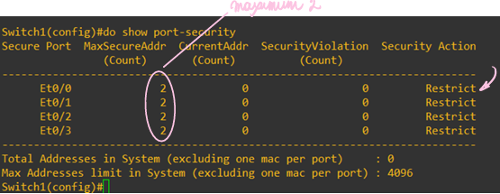
On voit pour tous les ports du switch que la sécurité est bien désormais RESTRICT.
Si on veut vérifier en détails la sécurité d'un port, on fait la commande suivante (e0/0 est l'interface voulue par cet exemple) :
show port-security interface e0/0
Nous obtenons le résultat suivant :
Pour vérifier que CDP est supporté :
show cdp
Si CDP par interface n'est PAS supporté :
configure terminal
no cdp run
Pour vérifier que LLDP est supporté :
show lldp
Si LLDP par interface n'est PAS supporté :
configure terminal
no lldp run
Les commandes no cdp enable, no lldp transmit et no lldp receive permettent respectivement de désactiver le protocole CDP (Cisco Discovery Protocol), d'empêcher l'envoi de trames LLDP et d'empêcher la réception de trames LLDP, afin de limiter la divulgation d'informations sur l'infrastructure réseau.
L'attaque STP (Root Bridge Attack) (L2) consiste à ce que l'attaquant envoie des BPDU forgées avec une priorité très basse et une adresse MAC très faible, afin que l'attaquant soit élu le Root Bridge. Une fois qu'il est considéré comme la racine du spanning-tree, les switches doivent recalculer toute la topologie autour de lui, ce qui provoque une redirection des chemins habituels et entraîne de l'instabilité ainsi que des perturbations sur le trafic. En prenant la place du Root Bridge, l'attaquant se retrouve au centre du spanning-tree et peut alors influencer ou perturber une partie du réseau qui passe par lui.
La solution est de configurer les ports comme port Edge pour protéger le réseau STP : le port ne participera pas à STP et toute BPDU reçue est bloquée. Ça empêche l'attaquant de faire élire Root Bridge.
La commande spanning-tree portfast edge active la fonctionnalité PortFast sur un port connecté à un hôte final, ce qui permet d'accélérer la mise en service de l'interface.
La commande spanning-tree bpduguard enable provoque la désactivation immédiate du port si une BPDU (Bridge Protocol Data Unit) est reçue, protégeant ainsi le réseau contre le raccordement de commutateurs non autorisés.
Pour vérifier le portfast/edge, on utilise la commande suivante :
show spanning-tree interface e0/1 detail
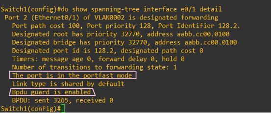
Et aussi visible dans le show run :
DHCP Snooping + DAI (option sécurité avancée) :
Le DHCP Snooping est un mécanisme de sécurité intégré dans les switchs Cisco.
Il sert à empêcher un faux serveur DHCP d'attribuer des adresses IP dans le réseau.
→ C'est un bouclier contre les attaques DHCP.
enable
configure terminal
ip dhcp snooping
ip dhcp snooping vlan 2,3
interface e0/0
ip dhcp snooping trust
exit
ip arp inspection vlan 2,3
end
copy running-config startup-config
DHCP Snooping permet de créer une base de données de correspondance IP-MAC-port, qui est ensuite utilisée par Dynamic ARP Inspection (DAI) pour bloquer les attaques ARP spoofing.
Tous les ports sont considérés comme untrusted par défaut. Seul le port vers le routeur est configuré comme trusted, car il est légitime pour envoyer des réponses DHCP.
Certaines images IOU L2 n'ont pas toutes les features (DHCP snooping/DAI). Si elles manquent, saute ces étapes ou utilise une image plus complète.
Ne pas confondre DHCP snooping (protection) et DHCP snoofing (attaque). Le vrai nom correct est DHCP spoofing, mais beaucoup écrivent "snoofing".
On peut limiter également le taux DHCP :
enable
configure terminal
interface e0/1
ip dhcp snooping limit rate 10
exit
end
copy running-config startup-config
Pour afficher l'état global du DHCP Snooping sur le switch :
show ip dhcp snooping
Pour afficher la table des baux DHCP sécurisés (binding table) :
show ip dhcp snooping binding
Quand un DHCP snooping est activé, le switch peut ajouter automatiquement l'Option 82 (DHCP Relay Agent Information) dans les messages DHCP qui sortent du switch. Pour désactiver l'injection de l'Option 82 dans les paquets DHCP, il faut faire la commande suivante :
no ip dhcp snooping information option
En gros, cette commande empêche le switch d'ajouter l'Option 82 aux messages DHCP, tout en gardant le filtrage DHCP activé.
Vérification / troubleshooting :
Pour afficher la liste des VLANs existants, leur état (active / suspended) et les ports associés à chaque VLAN :
show vlan brief
Pour afficher les ports configurés en trunk, le type d'encapsulation (802.1Q) et les VLANs autorisés sur le trunk :
show interfaces trunk
Pour afficher la table de routage IP du routeur :
show ip route
Pour afficher les adresses IP attribuées par le serveur DHCP, l'adresse MAC associée et la durée du bail :
show ip dhcp binding
Pour afficher l'état de la Port Security sur un port précis :
show port-security interface e0/1
Pour afficher toutes les ACL configurées sur le routeur :
show access-lists
Pour afficher la table de traduction NAT, c'est-à-dire "IP privée → IP publique" et "ports source traduits" :
show ip nat translations
Pour afficher si le DHCP snooping est activé, les VLANs protégés et les ports trusted / untrusted :
show ip dhcp snooping
Pour afficher l'état de Dynamic ARP Inspection (DAI) :
show ip arp inspection
Pour afficher la configuration active d'un équipement réseau :
show running-config
Ou encore la version abrégée :
show run
Pour capturer un paquet, dans la topologie GNS3, clique-droit sur le lien "Start capture" et choisis Wireshark si installé. Tu pourras faire des pings depuis PC1 et tu verras alors ICMP traverser.
N'oublies pas de "Stop capture" quand tu as fini (dans Wireshark ou dans GNS3).
Conclusion :
Cette configuration met en oeuvre une segmentation réseau sécurisée par VLANs, un routage inter-VLAN contrôlé par ACL, un accès Internet via NAT, et plusieurs mécanismes de sécurité de couche 2 (Port Security, STP, DHCP Snooping, DAI) afin de limiter les attaques internes et l'accès non autorisé.
Labo 2 : construction et sécurisation d'un réseau de taille moyenne :
Objectif :
L'objectif de ce labo est de mettre en place un réseau de taille moyenne et sécuriser celui-ci en mettant en oeuvre les principes de sécurisation d'une infrastructure réseau (network hardening).
Scénario :
Vous êtes un administrateur réseau et sécurité, votre entreprise a fait une acquisition d'un nouveau site que vous devez connecter sur le réseau existant, vous devez créer un réseau avec le routage dynamique entre les sites et sécuriser tout le réseau (sécurisation du data plane, du control plane et du management plane).
Le réseau est composé de deux sites et un Datacenter.
Mots clés :
AAA, Syslog, DNS, SNMP, NTP, ACL, OSPF.
Sécurité : Sécurité Labo1 + Tacacs (AAA), OSPF authentication, ACL (pour protéger les trois planes).
Topologie :
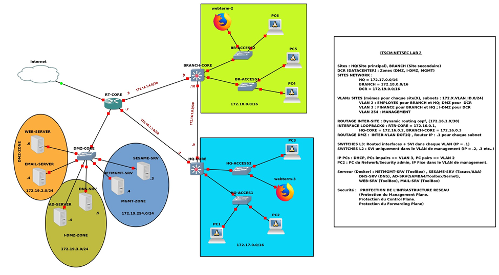
Équipement 1
Équipement 2
IP
Internet (e0/0)
RT-CORE (e0/0)
192.168.122.1/24
RT-CORE (e0/0)
Internet (e0/0)
192.168.122.2/24
RT-CORE (e0/3)
DMZ-CORE (e0/0)
172.19.254.2/24
DMZ-CORE (e0/0)
RT-CORE (e0/3)
172.19.X.1/24
DMZ-CORE (e0/1)
HQ-CORE (e0/0)
172.16.1.1/30
HQ-CORE (e0/0)
DMZ-CORE (e0/1)
172.16.1.2/30
DMZ-CORE (e0/2)
BRANCH-CORE (e0/0)
172.16.1.5/30
BRANCH-CORE (e0/0)
DMZ-CORE (e0/2)
172.16.1.6/30
BRANCH-CORE (e0/1)
HQ-CORE (e0/1)
172.16.1.9/30
HQ-CORE (e0/0)
BRANCH-CORE (e0/1)
172.16.1.10/30
HQ-CORE (e0/2)
HQ-ACCESS1 (e0/0)
172.17.X.3/24
HQ-ACCESS1 (e0/0)
HQ-CORE (e0/2)
172.17.X.1/24
HQ-CORE (e0/3)
HQ-ACCESS2 (e0/0)
172.17.X.2/24
HQ-ACCESS2 (e0/0)
HQ-CORE (e0/3)
172.18.X.1/24
BRANCH-CORE (e0/2)
BR-ACCESS1 (e0/0)
172.18.X.1/24
BR-ACCESS1 (e0/0)
BRANCH-CORE (e0/2)
172.18.X.3/24
BRANCH-CORE (e0/3)
BR-ACCESS2 (e0/0)
172.18.X.1/24
BR-ACCESS2 (e0/0)
BRANCH-CORE (e0/3)
172.18.X.2/24
RT-CORE
LOOPBACK
172.16.0.1/32
HQ-CORE
LOOPBACK
172.16.0.2/32
BRANCH-CORE
LOOPBACK
172.16.0.3/32
Une interface loopback est une interface virtuelle d'un routeur ou d'un switch de niveau 3.
Elle ne dépend d'aucun lien physique et reste active tant que l'équipement est opérationnel.
Les interfaces loopback sont utilisées pour :
identifier de manière unique et stable un équipement,
servir d'adresse de gestion (SSH, supervision),
fournir un identifiant fiable pour les protocoles de routage.
Les loopbacks sont généralement configurées avec un masque /32, car elles représentent une adresse unique et non un réseau.
Phrase clé à retenir : Le plan d'adressage structure les communications entre équipements, tandis que l'interface loopback fournit une identité réseau stable et indépendante des liens physiques.
Voici les différentes étapes à exécuter :
Étapes :
Configuration IP sur RT-CORE :
enable
configure terminal
interface e0/0
ip address 192.168.122.2 255.255.255.0
no shutdown
exit
Routage par défaut vers Internet :
ip route 0.0.0.0 0.0.0.0 192.168.122.1
→ Très important : cette route sera redistribuée plus tard via OSPF si demandé.
Créer les VLANs (sur TOUS les switchs) :
enable
configure terminal
vlan 2
name EMPLOYES
exit
vlan 3
name FINANCES
exit
vlan 254
name MANAGEMENT
exit
end
Même sur les switchs L3, les VLANs doivent exister.
enable
configure terminal
ip routing
interface vlan 2
ip address 172.17.2.1 255.255.255.0
no shutdown
exit
interface vlan 3
ip address 172.17.3.1 255.255.255.0
no shutdown
exit
interface vlan 254
ip address 172.17.254.1 255.255.255.0
no shutdown
exit
end
→ Ces IP sont les GATEWAYS des PCs.
IP sur les liens inter-sites :
Sur RT-CORE :
interface e0/1
ip address 172.16.1.1 255.255.255.252
no shutdown
exit
interface e0/2
ip address 172.16.1.5 255.255.255.252
no shutdown
exit
Sur HQ-CORE
interface e0/0
ip address 172.16.1.2 255.255.255.252
no shutdown
exit
interface e0/1
ip address 172.16.1.9 255.255.255.252
no shutdown
exit
Sur BRANCH-CORE :
interface e0/0
ip address 172.16.1.6 255.255.255.252
no shutdown
exit
interface e0/1
ip address 172.16.1.10 255.255.255.252
no shutdown
exit
Loopbacks (identités) :
interface loopback0
ip address 172.16.0.X 255.255.255.255
exit
(X selon l'équipement)
Routage OSPF :
Sur RT-CORE, HQ-CORE, BRANCH-CORE, DMZ-CORE :
router ospf 1
network 172.16.0.0 0.0.255.255 area 0
network 172.17.0.0 0.0.255.255 area 0
network 172.18.0.0 0.0.255.255 area 0
network 172.19.0.0 0.0.255.255 area 0
exit
Résumé :
Dans ce laboratoire, nous aborderons la sécurisation d'un réseau au niveau 3 (L3) et niveau 4 (L4) à l'aide de techniques de firewalling classique.
Sécurisation L3/L4 - Firewalling :
Nous verrons comment :
Bloquer une adresse IP vers une autre adresse IP.
Bloquer une adresse IP depuis un port spécifique vers une autre adresse IP.
Mettre en place des règles de filtrage basées sur différents critères réseau.
Question potentielle : Créer une ACL qui bloque les paquets dont le numéro de séquence est égal à un chiffre donné.
OSPF (Open Shortest Path First) est un protocole de routage dynamique utilisé pour l'échange d'informations de routage au sein d'un réseau.
Les trois axes de la sécurisation réseau :
Data Plane :
Sécurisation des données des utilisateurs.
Mise en oeuvre via des policies (politiques de filtrage et de contrôle).
Management Plane :
Sécurisation de l'accès à l'administration des équipements.
Seules les personnes autorisées (les ingénieurs réseau désignés) peuvent effectuer des actions de configuration ou de gestion.
Control Plane et Forwarding Plane :
Control Plane : définit la manière dont les paquets doivent être acheminés (choix des routes, décisions de routage).
Forwarding Plane : assure l'acheminement effectif des paquets selon les décisions prises par le Control Plane.